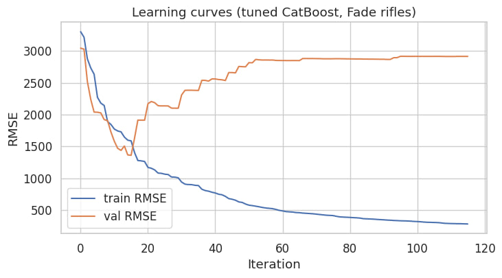
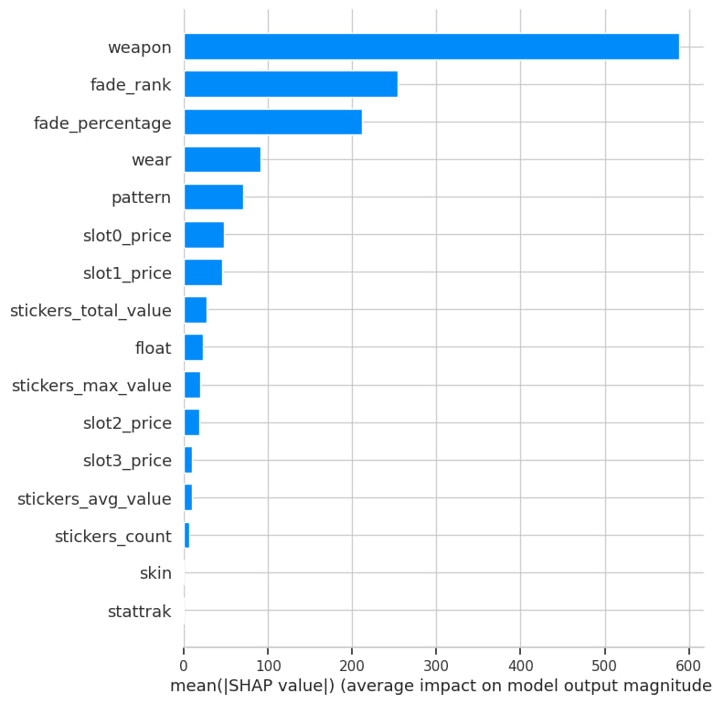

| Epic ID | Feature | Description | Priority |
|---|---|---|---|
| E1 | Skin Data Input | Input of all CS2 skin parameters | Must |
| E2 | Price Prediction | ML-based skin price prediction | Must |
| E3 | Price Visualization | Historical price charts | Should |
| E4 | Factor Analysis | SHAP-based influence analysis | Should |
| E5 | Automated Updates | Market data synchronization | Should |
| E6 | API Documentation | Swagger documentation | Could |
As a CS2 player
I want to enter detailed skin parameters
So that I can receive an accurate price estimate.
Acceptance Criteria: - All parameters are validated - Data is stored in PostgreSQL - StatTrak and non-StatTrak items are supported
As a CS2 trader
I want the system to predict skin prices
So that I can make informed trading decisions.
Acceptance Criteria: - Prediction response time <= 2 seconds - Prediction is displayed in the UI - Prediction history is persisted
As a CS2 player or trader
I want to see price trends and influencing
factors
So that I can analyze the market behavior.
Acceptance Criteria: - Interactive charts are available - Key influencing factors are visible
As an system administrator
I want the system to update market data
automatically
So that ML predictions remain accurate.
Acceptance Criteria: - Data updates occur at least every 12 hours - Errors are logged and monitored
As a developer
I want comprehensive Swagger documentation
So that system integration is simplified.
Acceptance Criteria: - All API endpoints are documented - Documentation is accessible via web interface
This section provides a comprehensive business-oriented overview of the diploma project dedicated to the analysis, monitoring, visualization, and prediction of Counter-Strike 2 (CS2) skin prices. The document defines the business context, motivation, system boundaries, stakeholders, and key functional and non-functional requirements.
The project is positioned at the intersection of digital economies, data analytics, and machine learning. It addresses the growing demand for transparent and explainable tools in virtual item trading environments, where financial decisions are increasingly driven by data-driven insights.
The proposed solution is a modular web-based analytical platform that integrates a frontend user interface, a backend API, a machine learning service, a relational database, and external trading platform APIs.
The primary purpose of this diploma project is to design and implement an analytical system that enables users to evaluate CS2 skin prices more accurately by considering both historical market trends and unique item-specific characteristics. Unlike traditional pricing tools, the system emphasizes explainability, automation, and adaptability to market dynamics.
The project also serves an academic purpose by demonstrating the practical application of: - business analysis methodologies, - machine learning techniques, - web system architecture design, - and data-driven decision support systems.
This Project Overview focuses on the Business Analysis (BA) perspective and does not describe low-level implementation details. Technical architecture and implementation aspects are addressed only at a conceptual level to support business requirements.
Detailed system design, data models, and implementation strategies are covered in subsequent diploma chapters.
The Counter-Strike 2 skin market represents a mature virtual economy with real monetary value, high trading volumes, and strong price volatility. Prices are influenced by numerous factors, including rarity, wear level (float), pattern index, applied stickers, StatTrak status, and overall market sentiment.
Existing tools typically provide aggregated or simplified price estimates, failing to capture the multidimensional nature of item valuation. Moreover, most platforms do not explain why a specific price is suggested, which reduces user trust and increases financial risk.
This diploma project proposes an interactive web-based system that allows users to input detailed skin parameters, receive machine learning–based price predictions, and explore historical price trends and factor influence through visual analytics. Market data is automatically synchronized with external trading platforms such as Steam Market, Buff, and Skinport, ensuring data relevance and reliability.
| Aspect | Description |
|---|---|
| Problem Domain | CS2 virtual item market analytics |
| Core Problem | Inaccurate and non-transparent skin valuation |
| Proposed Solution | ML-based analytical web platform |
| Target Users | CS2 players, traders, trading platforms |
| Key Capabilities | Prediction, visualization, automation |
| Architecture | Frontend – Backend API – ML Service – Database |
| Academic Focus | Business analysis, ML, data visualization |
The trading of virtual items in modern online games has evolved into a complex digital economy with real-world financial implications. Counter-Strike 2 (CS2) represents one of the most prominent examples of such an economy, where in-game cosmetic items, known as skins, are actively traded on both official and third-party marketplaces.
Skin prices are influenced by a combination of: - intrinsic item properties (rarity, float value, pattern), - cosmetic enhancements (stickers, StatTrak), - market supply and demand, - temporal trends and external events.
Due to this complexity, accurate price estimation requires advanced analytical approaches that go beyond basic averaging or historical comparison.
Despite the high economic value of CS2 skins, existing tools suffer from several limitations: - incomplete consideration of item-specific parameters, - lack of explainability in price estimation, - delayed or manual data updates, - insufficient visualization of price dynamics.
These limitations lead to suboptimal decision-making and financial losses for users.
Who:
CS2 players, traders, and digital trading platforms.
What:
Users lack access to accurate, transparent, and explainable tools for
determining the true market value of CS2 skins.
Why:
Inaccurate valuation increases financial risk, reduces market
efficiency, and undermines user trust in existing analytical
solutions.
| Goal | Description | KPI |
|---|---|---|
| Pricing Accuracy | Improve correctness of price estimates | ≥ 90% accuracy |
| Risk Reduction | Support informed trading decisions | ≥ 80% user satisfaction |
| Transparency | Explain pricing factors | SHAP visualizations |
| Automation | Reduce manual data handling | <= 24h data refresh |
| Reliability | Ensure stable system behavior | ≥ 99% uptime |
The project explicitly does not aim to: - facilitate direct trading transactions, - provide financial or investment advice, - replace existing marketplaces.
The system includes functionality for: - detailed skin data input, - price prediction using ML models, - visualization of historical trends, - factor influence analysis, - automated data synchronization, - API documentation and containerized deployment.
Excluded functionality: - trading execution, - payments, - social interaction.
| Category | Description |
|---|---|
| Time | Diploma schedule |
| Budget | Academic scope |
| Technology | ASP.NET Core, PostgreSQL |
| Security | GDPR compliance |
| Load | ≤ 500 concurrent users |
Stakeholders were identified based on their interaction with the system, influence on project success, and interest in outcomes.
| User Group | Description | Primary Needs |
|---|---|---|
| CS2 Players | Casual and competitive users | Accurate valuation |
| CS2 Traders | Active market participants | Predictive analytics |
| Trading Platforms | Market operators | Market insights |
| Development Team | System implementers | Clear requirements |
| Academic Supervisor | Project evaluator | Methodological rigor |
| Stakeholder | Role | Interest | Influence | Engagement |
|---|---|---|---|---|
| CS2 Players | End users | High | Medium | High |
| CS2 Traders | Power users | Very High | Medium | High |
| Trading Platforms | Data providers | High | High | Medium |
| Development Team | Implementers | High | High | High |
| Academic Supervisor | Reviewer | Medium | High | Medium |
| External APIs | Data sources | Medium | Medium | Medium |
AI Skin Explanation Service
This document provides a complete technical and architectural overview of the AI Skin Explanation Service, a component of the CS2 price-prediction platform. The service integrates with an internal ML system, retrieves metadata from the database, constructs structured prompts, and generates clear natural-language explanations for skin prices using OpenAI models.
architectural decisions
prompt engineering strategy
fallback logic for multi-model LLM routing
sanitization and safety rules
API behavior
data-processing pipeline
The goal is to provide an engineering-level understanding of the service and justify its design.
The service converts raw prediction data (float, wear, pattern, rarity, stickers) into a human-readable explanation, based entirely on provided numerical values.
Integrate CS2 prediction model output with LLMs
Retrieve metadata (weapon, skin, tier, pattern info)
Construct structured prompts for different item categories
Enforce strict rules preventing hallucinations (e.g., no sticker names invention)
Support multi-model fallback logic
Format results into a clean explanation for frontend consumption
Users never interact with prompts directly — they simply receive an explanation of a predicted price.
Internal ML Service
Provides predicted numeric price
Does not produce explanations
AppDbContext
Skins
Wear tiers
Sticker metadata
Pattern-related tables (CH, Fade, Doppler, etc.)
AI Components
AiPromptFactory — builds prompts for each category
AiStickerService — resolves sticker prices & names
AiExplanationService — high-level orchestration
LlmFailoverService — manages model selection & failover
OpenAiClient — low-level HTTP client for OpenAI Responses API
Controllers
/api/ai/explain (primary → gpt-4o-mini)
/api/ai/explain-v2 (primary → gpt-4.1-mini)
The service functions purely as a computation and orchestration layer, never storing user data.
4.1 Input Sources
PredictedPrice — ML model output
SkinId, WearTierId, Pattern, FloatValue
Stickers[] — list of sticker IDs (ignored for knives)
IsStattrak
LlmPriority — determines fallback direction
All metadata is validated through the database.
4.2 Processing Steps
Validate request
Skin and wear must exist
Wear must be valid for the skin
Pattern must exist for this skin type
Determine item category
ch_knife, ch_gun, fade_gun, fade_knife, doppler_knife, float_gun
Sticker resolution
Guns → full sticker processing
Knives → stickers are forcibly ignored
Construct prompt
AiPromptFactory builds scenario-specific prompt
Includes strict behavioral instructions
Pass prompt to LLM with fallback
OpenAiClient generates plain-text explanation
LlmFailoverService handles failures
Return formatted explanation Output is always a single clean text block without markdown, emojis, or hallucinated names.
5.1 System Prompt Responsibilities
English-only output
No markdown, no lists, no bullets
No hallucinations of sticker names
No invented historical data
Explanation must be based only on numeric values provided
Only plain sentences
Forget stickers entirely if item is a knife
It defines global AI behavior and ensures consistent output regardless of user input.
5.2 Item-Specific Prompts
Case Hardened Knife
Uses color distribution (blue/gold/purple), float, wear.
Case Hardened Gun
Adds sticker block and blue score tiering.
Doppler Knife
Uses phase name and float.
Fade Gun
Includes fade percentage and ranking.
Fade Knife
Fade % and fade rank; no stickers.
Float-Sensitive Guns
Only float + wear + stickers.
Each prompt ends with a footer describing how to interpret the factors.
Stickers on knives are replaced with 0 values
Pattern mismatch triggers validation errors
Wear tiers are validated against allowed values
No user-controlled strings are injected directly into prompts (all metadata comes from controlled DB tables)
Therefore, input sanitization is predefined by controlled sources.
7.1 Available Models
Primary: gpt-4o-mini (fast, cheap)
Secondary: gpt-4.1-mini (more consistent output)
7.2 Priority Types
MiniThenGpt41 — used by standard /explain endpoint
Gpt41ThenMini — used by /explain-v2 endpoint
7.3 Multi-Model Failover Logic
Try primary model
On exception → try fallback model
If both fail → propagate error to controller
This guarantees that the AI explanation always works even if one model is temporarily unavailable.
OpenAI request failures
Fallback model activation
Pattern/wear validation failures
Unexpected empty outputs from LLM
Sensitive content such as prompts or user-provided values is never logged.
API keys stored only in environment variables
Prompts prohibit hallucination
Prompts prohibit mentioning stickers for knives
Only controlled DB data is injected into prompts
No user prompt influence is allowed
No execution of user instructions
Validation layer prevents invalid patterns/wear tiers
The service behaves predictably and resists injection attempts by design.
Strict prompt engineering
Prevents hallucinations & inconsistencies.
Multi-model fallback
Ensures reliability under outages.
Modular architecture
Easily extendable for new skin types.
Category-specific prompts
CH logic differs greatly from Fade logic
Doppler phases require structured handling
Knives vs guns differ in sticker logic
Pure orchestration
The service does not store user data or predictions — only processes and explains.
The CS2 AI Explanation Microservice is a robust, modular, and reliable system that converts numeric ML predictions into natural-language explanations using OpenAI models.
strong safety through controlled metadata
no hallucination through strict prompts
fallback reliability across models
extensibility for new item categories
clean architecture with clearly separated responsibilities
This implementation adheres to modern standards of LLM integration in production-grade systems.
The Admin API provides endpoints for managing internal reference data used by the CS2 skin pricing and prediction system. These endpoints allow administrators to create, update, and delete metadata such as weapon types, weapons, skins, patterns, stickers, and wear tiers.
All responses are returned in JSON format.
Base URL: /api/v1/admin
Authentication: Required (API Key)
All Admin API endpoints require API key authorization.
Header format:
Authorization: API_KEYRequests without a valid API key are rejected.
The Admin API is an internal management interface. It is not intended for public clients and is protected via API key authorization. All operations directly modify reference data used by Meta, Prediction, and AI Explanation APIs.
{
"error": {
"code": "ERROR_CODE",
"message": "Human-readable error description"
}
}| HTTP Code | Description |
|---|---|
| 400 | Validation error |
| 401 | Unauthorized |
| 404 | Resource not found |
| 500 | Internal server error |
The following validation rules apply to all Admin endpoints:
Creates a new Case Hardened gun pattern entry.
Request Body
{
"skinId": 0,
"pattern": 0,
"playsideBlue": 0,
"backsideBlue": 0
}Validation - skinId must reference an existing skin - pattern must not already exist for the skin - blue values must be between 0 and 100
Updates an existing Case Hardened gun pattern.
Validation - pattern entry must exist
Deletes a Case Hardened gun pattern.
Creates a Case Hardened knife pattern entry.
Request Body
{
"skinId": 0,
"pattern": 0,
"backsideBlue": 0,
"backsidePurple": 0,
"backsideGold": 0,
"playsideBlue": 0,
"playsidePurple": 0,
"playsideGold": 0
}Validation - skinId must exist - pattern must be unique per skin - color percentages must be between 0 and 100
Creates a Doppler phase.
Validation - phase name must be unique
Deletes a Doppler phase.
Links a skin to a Doppler phase.
Validation - skinId must exist - phaseId must exist - duplicate links are not allowed
Creates a fade gun pattern.
Validation - fadePercentage must be between 0 and 100 - fadeRank must be positive
Same validation rules as fade gun patterns.
Creates a new skin.
Validation - weaponId must exist - skin name must be unique per weapon
Defines which wear tiers are supported by a skin.
Validation - skinId must exist - wearTierId must exist - mapping must be unique
Creates a sticker entry.
Request Body
{
"name": "string",
"referencePrice": 0
}Validation - sticker name must be unique - referencePrice must be greater than 0
Creates a weapon.
Validation - weaponTypeId must exist - weapon name must be unique
Creates a weapon type.
Validation - code must be unique - name must be unique
Creates a wear tier.
Validation - wear tier name must be unique
The Admin API uses URL-based versioning:
/api/v1/adminBreaking changes require a new major version.
The AI Explanation API provides natural-language explanations for predicted skin prices. It explains how different attributes of a skin configuration influence the final predicted price produced by the machine learning model.
All responses are returned in JSON format.
Base URL: /api/v1/ai
Authentication: Not required
This API acts as an interpretability layer on top of the pricing prediction model. It does not calculate prices itself and only explains already predicted values.
{
"error": {
"code": "ERROR_CODE",
"message": "Human-readable error description"
}
}| HTTP Code | Description |
|---|---|
| 400 | Validation error |
| 404 | Resource not found |
| 500 | Internal server error |
| Field | Validation Rule |
|---|---|
| predictedPrice | Must be greater than 0 |
| skinId | Must reference an existing skin |
| wearTierId | Must correspond to the provided float value |
| floatValue | Must be between 0.0 and 1.0 |
| pattern | Must exist for the selected skin |
| stickers | Must reference existing sticker IDs |
Generates a concise AI-generated explanation for a predicted skin price.
{
"predictedPrice": 1699,
"skinId": 1,
"wearTierId": 1,
"floatValue": 0.0003,
"isStattrak": true,
"pattern": 3,
"stickers": [0]
}| Field | Type | Description |
|---|---|---|
| predictedPrice | number | Predicted price |
| skinId | integer | Skin identifier |
| wearTierId | integer | Wear tier identifier |
| floatValue | number | Skin float value |
| isStattrak | boolean | StatTrak flag |
| pattern | integer | Pattern index |
| stickers | integer[] | Sticker IDs |
{
"explanation": "The model predicted a price of 1699.00 USDT primarily due to the excellent condition and rare pattern of the skin."
}HTTP 400
{
"error": {
"code": "INVALID_PRICE",
"message": "Predicted price must be greater than 0"
}
}HTTP 404
{
"error": {
"code": "SKIN_NOT_FOUND",
"message": "Skin with the specified ID was not found"
}
}HTTP 404
{
"error": {
"code": "PATTERN_NOT_FOUND",
"message": "Pattern is not available for the selected skin"
}
}HTTP 400
{
"error": {
"code": "WEAR_TIER_MISMATCH",
"message": "Wear tier does not correspond to the provided float value"
}
}Provides a more detailed explanation with deeper analysis of pricing factors.
Same structure and validation rules as v1.
{
"explanation": "The predicted price is influenced by the skin's near-perfect condition, rarity of the pattern, and StatTrak status."
}This document describes the API documentation strategy used in the diploma project. It defines the tools, standards, conventions, and rules applied when documenting all APIs in the system.
The goal of this document is to ensure that the API documentation is: - clear and consistent; - technically accurate; - easy to maintain and extend; - compliant with diploma project evaluation requirements.
The documentation covers the following API groups: - Meta API (reference metadata); - Prediction API (price prediction workflow); - AI Explanation API (model explainability); - Admin API (internal reference data management); - ML Service API (internal ML inference service).
Both public and internal APIs are documented. Internal APIs are explicitly marked as such.
The following tools and technologies are used for API documentation:
The documentation follows these standards and best practices:
The following naming conventions are applied consistently:
URL paths: kebab-case
Example: /api/v1/meta/weapon-types
JSON fields: camelCase
Example: predictedPrice, wearTierId
Error codes: UPPER_SNAKE_CASE
Example: SKIN_NOT_FOUND,
VALIDATION_ERROR
Resource names: plural nouns
Example: /skins, /weapons,
/stickers
The API uses URL-based versioning:
/api/v1/...Rules: - Breaking changes require a new major version; - Older versions remain documented until deprecated; - Version changes are reflected in both Markdown documentation and OpenAPI schemas.
All documentation follows these formatting rules:
Recommended directory structure:
/docs
API_DOCUMENTATION_RULES.md
META_API_DOCUMENTATION.md
PREDICTION_API_DOCUMENTATION.md
AI_EXPLANATION_API_DOCUMENTATION.md
ADMIN_API_DOCUMENTATION.md
ML_SERVICE_API_DOCUMENTATION.mdAll APIs document error handling explicitly.
Rules: - Error responses use a unified structure where applicable; - HTTP status codes are documented for each endpoint; - Validation errors, authorization errors, and not-found errors are described separately.
Authentication requirements are documented per API group:
The OpenAPI specification: - serves as the single source of truth for API contracts; - is stored as a version-controlled YAML file; - must pass validation using OpenAPI tooling; - reflects the same structure and behavior as the Markdown documentation.
The following documentation limitations are explicitly acknowledged:
These limitations are intentional design decisions and are documented for transparency.
This documentation strategy ensures a clear separation between API behavior, validation responsibilities, and architectural concerns. It provides both human-readable documentation and machine-readable specifications, meeting industry standards and diploma project evaluation requirements.
The Meta API provides read-only reference data related to CS2 weapons, skins, cosmetic attributes, and stickers. This API is designed to be used by other system components such as pricing services, analytics modules, and machine learning pipelines.
All responses are returned in JSON format.
Base URL: /api/v1/meta
Authentication: Not required (public API)
The Meta API acts as a reference data provider and does not store user-specific or transactional data. It supplies normalized metadata used across the system to ensure consistency and validation.
All error responses follow a unified format:
{
"error": {
"code": "ERROR_CODE",
"message": "Human-readable error description"
}
}| HTTP Code | Meaning |
|---|---|
| 400 | Invalid request parameters |
| 404 | Resource not found |
| 500 | Internal server error |
Returns a list of all supported weapon types.
Response 200 OK
[
{
"id": 1,
"code": "rifle",
"name": "Rifles"
}
]Returns all weapons belonging to the specified weapon type.
Path Parameters
| Name | Type | Description |
|---|---|---|
| weaponTypeId | integer | Unique weapon type identifier |
Response 200 OK
[
{ "id": 1, "name": "AK-47" },
{ "id": 2, "name": "M4A1-S" }
]Errors - 404 Weapon type not found
Returns all skins associated with the selected weapon.
Path Parameters
| Name | Type | Description |
|---|---|---|
| weaponId | integer | Weapon identifier |
Response 200 OK
[
{
"id": 10,
"name": "Redline",
"patternStyle": "Abstract"
}
]Returns available wear tiers for the specified skin.
Response 200 OK
[
{ "id": 1, "name": "Factory New" },
{ "id": 2, "name": "Minimal Wear" }
]Returns all pattern indexes for the selected skin.
Response 200 OK
[
{ "id": 661, "name": "Pattern 661" }
]Returns a list of available stickers.
Query Parameters
| Name | Type | Description |
|---|---|---|
| q | string | Text search query |
| limit | integer | Maximum number of results (default: 50) |
Example Request
GET /stickers?q=crown&limit=10Response 200 OK
[
{ "id": 101, "name": "Crown (Foil)" }
]The ML Service API exposes internal prediction endpoints for different CS2 skin categories. It is used exclusively by the backend Prediction API and is not accessed directly by end users.
All requests and responses use JSON format. All endpoints return the predicted price as a string, as produced by CatBoost models.
Base URL: /predict
Authentication: Not required (internal service)
The ML Service is a dedicated microservice responsible only for machine learning inference.
Responsibilities: - Load trained ML models at startup - Accept preprocessed feature vectors - Return raw price predictions
Non-responsibilities: - Business validation - Entity existence checks (skin, pattern, wear tier, etc.) - Authorization and access control
All domain validation is handled upstream by the Prediction API.
The ML Service relies solely on FastAPI + Pydantic validation.
Validation characteristics: - Type checking - Required field enforcement - Schema-level validation
Invalid requests return HTTP 422 Unprocessable Entity.
No domain-level validation (e.g. skin existence, pattern validity) is performed.
{
"detail": [
{
"loc": ["body", "field_name"],
"msg": "validation error",
"type": "type_error"
}
]
}Predicts prices for Case Hardened weapons and knives using color distribution features.
{
"float": 0.0,
"pattern": 0,
"stattrak": 0,
"backside_blue": 0,
"backside_purple": 0,
"backside_gold": 0,
"playside_blue": 0,
"playside_purple": 0,
"playside_gold": 0,
"weapon": "string",
"skin": "string",
"wear": "string"
}"1699.42"Predicts prices for Case Hardened guns using extended feature vectors.
{
"weapon": "string",
"skin": "string",
"wear": "string",
"pattern_style": "string",
"float": 0.0,
"pattern": 0,
"stattrak": 0,
"backside_blue": 0,
"playside_blue": 0,
"stickers_count": 0,
"stickers_total_value": 0,
"stickers_avg_value": 0,
"stickers_max_value": 0,
"slot0_price": 0,
"slot1_price": 0,
"slot2_price": 0,
"slot3_price": 0,
"blue_score": 0,
"blue_tier": 0
}"1325.11"Predicts prices for Doppler skins based on phase, float value, and StatTrak flag.
{
"weapon": "string",
"skin": "string",
"wear": "string",
"phase": "string",
"float": 0.0,
"stattrak": 0
}"2480.00"Predicts prices for Fade guns using fade percentage, rank, and sticker-derived features.
{
"float": 0.0,
"pattern": 0,
"stattrak": 0,
"fade_percentage": 0,
"fade_rank": 0,
"stickers_count": 0,
"stickers_total_value": 0,
"stickers_avg_value": 0,
"stickers_max_value": 0,
"slot0_price": 0,
"slot1_price": 0,
"slot2_price": 0,
"slot3_price": 0,
"weapon": "string",
"skin": "string",
"wear": "string"
}"987.65"Predicts prices for Fade knives using fade-related features.
{
"float": 0.0,
"pattern": 0,
"stattrak": 0,
"fade_percentage": 0,
"fade_rank": 0,
"weapon": "string",
"skin": "string",
"wear": "string"
}"2100.30"Predicts prices for skins where float value has a strong influence.
{
"float": 0.0,
"stattrak": 0,
"stickers_count": 0,
"stickers_total_value": 0,
"stickers_avg_value": 0,
"stickers_max_value": 0,
"slot0_price": 0,
"slot1_price": 0,
"slot2_price": 0,
"slot3_price": 0,
"weapon": "string",
"skin": "string",
"wear": "string"
}"745.80"The Prediction API is the main endpoint used by the ASP.NET Core backend to generate a unified price prediction for any CS2 skin configuration.
The API aggregates metadata, prepares feature vectors, selects the appropriate machine learning model, invokes the ML microservice, and returns a final structured prediction result.
All responses are returned in JSON format.
Base URL: /api/v1
Authentication: Not required
This endpoint represents the core prediction workflow of the system. It integrates database metadata, business validation rules, and multiple ML models (Case Hardened, Fade, Doppler, Float-Sensitive, etc.) into a single prediction pipeline.
{
"error": {
"code": "ERROR_CODE",
"message": "Human-readable error description"
}
}| HTTP Code | Description |
|---|---|
| 400 | Validation error |
| 404 | Resource not found |
| 500 | Internal server error |
The Prediction API applies the same validation rules as the AI Explanation API, with additional constraints.
| Field | Validation Rule |
|---|---|
| skinId | Must reference an existing skin |
| wearTierId | Must correspond to the provided float value |
| floatValue | Must be between 0.0 and 1.0 |
| pattern | Must exist for the selected skin |
| stickers | Maximum 4 stickers allowed |
| stickers[] | Each sticker ID must exist |
If any validation rule is violated, the request is rejected.
Performs a complete price prediction workflow for the selected skin configuration.
{
"skinId": 1,
"wearTierId": 1,
"floatValue": 0.003,
"isStattrak": true,
"pattern": 3,
"stickers": [0]
}| Field | Type | Required | Description |
|---|---|---|---|
| skinId | integer | yes | Selected skin identifier |
| wearTierId | integer | yes | Wear tier identifier |
| floatValue | number | yes | Actual float value |
| isStattrak | boolean | yes | StatTrak flag |
| pattern | integer | no | Pattern index |
| stickers | integer[] | no | Applied sticker IDs (max 4) |
{
"predicted_price": 1699.6503984707747,
"stickers_features": {
"stickers_count": 0,
"stickers_total_value": 0,
"stickers_avg_value": 0,
"stickers_max_value": 0
}
}| Field | Type | Description |
|---|---|---|
| predicted_price | number | Final predicted price |
| stickers_features | object | Extracted sticker-related features |
| Field | Description |
|---|---|
| stickers_count | Total number of stickers |
| stickers_total_value | Combined base value of all stickers |
| stickers_avg_value | Average sticker value |
| stickers_max_value | Maximum sticker value |
HTTP 400
{
"error": {
"code": "STICKER_LIMIT_EXCEEDED",
"message": "A maximum of 4 stickers is allowed"
}
}HTTP 404
{
"error": {
"code": "SKIN_NOT_FOUND",
"message": "Skin with the specified ID was not found"
}
}HTTP 404
{
"error": {
"code": "PATTERN_NOT_FOUND",
"message": "Pattern is not available for the selected skin"
}
}HTTP 400
{
"error": {
"code": "WEAR_TIER_MISMATCH",
"message": "Wear tier does not correspond to the provided float value"
}
}The API uses URL-based versioning:
/api/v1/predictBreaking changes require a new major version.
This document provides a comprehensive and in-depth technical
description of the backend subsystem of the CS2 Skin Price
Prediction System.
The backend represents the core orchestration layer of
the application, integrating database access, business logic, machine
learning inference, AI-based explanations, and external services into a
single coherent system.
The goal of this documentation is to: - Fully describe the backend architecture and its responsibilities - Explain design decisions and trade-offs - Provide a clear understanding of how data flows through the system - Demonstrate compliance with academic and engineering best practices
This document is intentionally extended and detailed, as required for diploma-level technical documentation.
The backend subsystem is responsible for the following high-level functions:
The backend is implemented as an ASP.NET Core 8 Web API, following a layered architecture.
The backend follows a Layered Architecture with clear separation of concerns:
This approach was selected because it: - Improves maintainability - Simplifies testing - Enables independent evolution of system layers - Aligns with enterprise-grade backend design standards
Client (Web / API Consumer)
|
v
ASP.NET Core API Controllers
|
v
Application Services (Business Logic)
|
+---------------------+
| |
v v
PostgreSQL Database ML Prediction Service (FastAPI)
|
v
Persistent Metadata & Reference DataThe backend acts as the central coordinator, ensuring that all components interact in a controlled and predictable manner.
The backend project is structured to reflect architectural boundaries explicitly.
cs2price_prediction/
├── Config/ # Application configuration classes
│ ├── OpenAiOptions.cs # OpenAI integration configuration
│ └── MlServiceOptions.cs # ML service connection configuration
│
├── Controllers/ # ASP.NET Core HTTP controllers
│ ├── PredictionController.cs # CS2 skin price prediction endpoints
│ ├── MetaController.cs # Reference and metadata endpoints
│ ├── AiExplanationController.cs # AI-generated explanation endpoints
│ ├── AiExplanationV2Controller.cs # Extended AI explanation endpoints
│ └── Admin/ # Administrative API controllers
│ ├── AdminSkinsController.cs # Skin CRUD management
│ ├── AdminSkinWearTiersController.cs # Skin wear tier management
│ ├── AdminStickersController.cs # Sticker management
│ ├── AdminWeaponsController.cs # Weapon management
│ ├── AdminWeaponTypesController.cs# Weapon type management
│ ├── AdminWearTiersController.cs # Wear tier management
│ └── Patterns/ # Pattern management controllers
│ ├── AdminCaseHardenedGunPatternsController.cs # CH gun patterns
│ ├── AdminCaseHardenedKnifePatternsController.cs# CH knife patterns
│ ├── AdminDopplerPhasesController.cs # Doppler phases
│ ├── AdminDopplerSkinPhasesController.cs # Skin–Doppler mapping
│ ├── AdminFadeGunPatternsController.cs # Fade gun patterns
│ └── AdminFadeKnifePatternsController.cs # Fade knife patterns
│
├── course-diploma-projects-docs-main/ # External diploma-related materials
│
├── cs2_ml_service/ # Python-based ML prediction service
│ ├── app.py # FastAPI application entry point
│ ├── pkl_extract_all.py # Feature extraction script
│ ├── requirements.txt # Python dependencies
│ ├── data/ # Training datasets
│ ├── extracted/ # Extracted features and configs
│ └── models/ # Trained CatBoost models
│
├── Data/ # Data access layer
│ ├── AppDbContext.cs # EF Core database context
│ ├── DbSeeder.cs # Initial database seeding
│ ├── DesignTimeDbContextFactory.cs # Design-time EF context
│ └── IAdminDbContextFactory.cs # Admin DB context factory interface
│
├── data_for_db/ # CSV data for DB initialization
│ ├── skins.csv # Skins dataset
│ ├── weapons.csv # Weapons dataset
│ ├── weapon_types.csv # Weapon types dataset
│ ├── wear_tiers.csv # Wear tiers dataset
│ ├── skin_wear_tiers.csv # Skin-wear tier mapping
│ ├── stickers_dataset.csv # Stickers dataset
│ ├── doppler_phases.csv # Doppler phases dataset
│ ├── doppler_skin_phases.csv # Skin–Doppler mapping
│ ├── fade_gun_unique_patterns.csv # Fade gun patterns
│ ├── fade_knives_unique_patterns.csv # Fade knife patterns
│ ├── case_hardened_gun_unique_patterns.csv # CH gun patterns
│ └── case_hardened_knives_unique_patterns.csv # CH knife patterns
│
├── data_for_db/ # SQL initialization scripts
│ └── init.sql
│
├── Domain/ # Domain models (business entities)
│ ├── Meta/
│ │ ├── Skin.cs
│ │ ├── SkinWearTier.cs
│ │ ├── Weapon.cs
│ │ ├── WeaponType.cs
│ │ └── WearTier.cs
│ ├── Patterns/
│ │ ├── CaseHardenedGunPattern.cs
│ │ ├── CaseHardenedKnifePattern.cs
│ │ ├── DopplerPhase.cs
│ │ ├── DopplerSkinPhase.cs
│ │ ├── FadeGunPattern.cs
│ │ └── FadeKnifePattern.cs
│ └── Stickers/
│ ├── Sticker.cs
│ └── StickerPrice.cs
│
├── DTOs/ # Data Transfer Objects
│ ├── Admin/ # DTOs for administrative operations
│ │ ├── Skins/ # DTOs for skin management
│ │ │ ├── CreateSkinDto.cs # DTO for creating a new skin
│ │ │ └── UpdateSkinDto.cs # DTO for updating existing skin data
│ │ │
│ │ ├── SkinWearTiers/ # DTOs for skin wear tier management
│ │ │ ├── CreateSkinWearTierDto.cs # DTO for assigning a wear tier to a skin
│ │ │ ├── UpdateSkinWearTierDto.cs # DTO for updating skin wear tier data
│ │ │ └── DeleteSkinWearTierDto.cs # DTO for removing a wear tier from a skin
│ │ │
│ │ ├── Stickers/ # DTOs for sticker administration
│ │ │ ├── CreateStickerDto.cs # DTO for creating a new sticker
│ │ │ └── UpdateStickerDto.cs # DTO for updating sticker information
│ │ │
│ │ ├── Weapons/ # DTOs for weapon administration
│ │ │ ├── CreateWeaponDto.cs # DTO for creating a new weapon
│ │ │ └── UpdateWeaponDto.cs # DTO for updating weapon data
│ │ │
│ │ ├── WeaponTypes/ # DTOs for weapon type administration
│ │ │ ├── CreateWeaponTypeDto.cs # DTO for creating a weapon type
│ │ │ └── UpdateWeaponTypeDto.cs # DTO for updating weapon type data
│ │ │
│ │ ├── WearTiers/ # DTOs for wear tier administration
│ │ │ ├── CreateWearTierDto.cs # DTO for creating a wear tier
│ │ │ └── UpdateWearTierDto.cs # DTO for updating wear tier data
│ │ │
│ │ └── Patterns/ # DTOs for visual pattern administration
│ │ ├── CaseHardenedGun/ # Case Hardened gun pattern DTOs
│ │ │ ├── CreateCaseHardenedGunPatternDto.cs
│ │ │ │ # DTO for creating a Case Hardened gun pattern
│ │ │ └── UpdateCaseHardenedGunPatternDto.cs
│ │ │ # DTO for updating a Case Hardened gun pattern
│ │ │
│ │ ├── CaseHardenedKnife/ # Case Hardened knife pattern DTOs
│ │ │ ├── CreateCaseHardenedKnifePatternDto.cs
│ │ │ │ # DTO for creating a Case Hardened knife pattern
│ │ │ └── UpdateCaseHardenedKnifePatternDto.cs
│ │ │ # DTO for updating a Case Hardened knife pattern
│ │ │
│ │ ├── DopplerPhase/ # Doppler phase DTOs
│ │ │ ├── CreateDopplerPhaseDto.cs
│ │ │ │ # DTO for creating a Doppler phase
│ │ │ └── UpdateDopplerPhaseDto.cs
│ │ │ # DTO for updating Doppler phase data
│ │ │
│ │ ├── DopplerSkinPhase/ # Skin–Doppler phase mapping DTOs
│ │ │ ├── CreateDopplerSkinPhaseDto.cs
│ │ │ │ # DTO for binding a skin to a Doppler phase
│ │ │ └── UpdateDopplerSkinPhaseDto.cs
│ │ │ # DTO for updating skin–Doppler phase mapping
│ │ │
│ │ ├── FadeGun/ # Fade gun pattern DTOs
│ │ │ ├── CreateFadeGunPatternDto.cs
│ │ │ │ # DTO for creating a Fade gun pattern
│ │ │ └── UpdateFadeGunPatternDto.cs
│ │ │ # DTO for updating a Fade gun pattern
│ │ │
│ │ └── FadeKnife/ # Fade knife pattern DTOs
│ │ ├── CreateFadeKnifePatternDto.cs
│ │ │ # DTO for creating a Fade knife pattern
│ │ └── UpdateFadeKnifePatternDto.cs
│ │ # DTO for updating a Fade knife pattern
│ │
│ ├── AI/ # DTOs for AI explanation and analysis
│ │ ├── AiExplainFrontendInputDto.cs
│ │ │ # Input DTO for AI explanation generation from frontend
│ │ ├── AiExplainV2FrontendInputDto.cs
│ │ │ # Extended input DTO for AI explanation generation
│ │ ├── CaseHardenedKnife/
│ │ │ └── AiCaseHardenedKnifeRequest.cs
│ │ │ # AI request DTO for Case Hardened knife explanation
│ │ ├── ChGuns/
│ │ │ └── AiChGunsRequest.cs
│ │ │ # AI request DTO for Case Hardened gun explanation
│ │ ├── Doppler/
│ │ │ └── AiDopplerRequest.cs
│ │ │ # AI request DTO for Doppler explanation
│ │ ├── FadeGun/
│ │ │ └── AiFadeGunsRequest.cs
│ │ │ # AI request DTO for Fade gun explanation
│ │ ├── FadeKnife/
│ │ │ └── AiFadeKnivesRequest.cs
│ │ │ # AI request DTO for Fade knife explanation
│ │ ├── FloatGuns/
│ │ │ └── AiFloatSensitiveGunsRequest.cs
│ │ │ # AI request DTO for float-sensitive gun explanation
│ │ └── StickersDtoForAI/
│ │ └── StickersDtoForAI.cs
│ │ # DTO containing sticker data for AI processing
│ │
│ ├── Meta/ # DTOs for reference data transfer
│ │ ├── SkinDto.cs # DTO representing skin data
│ │ ├── WeaponDto.cs # DTO representing weapon data
│ │ ├── WeaponTypeDto.cs # DTO representing weapon type data
│ │ ├── WearTierDto.cs # DTO representing wear tier data
│ │ ├── StickerDto.cs # DTO representing sticker data
│ │ └── PatternOptionDto.cs # DTO representing available pattern options
│ │
│ ├── Ml/ # DTOs for ML service communication
│ │ ├── MlCaseHardenedKnifeRequest.cs # ML request DTO for CH knife prediction
│ │ ├── MlChGunsRequest.cs # ML request DTO for CH gun prediction
│ │ ├── MlDopplerRequest.cs # ML request DTO for Doppler prediction
│ │ ├── MlFadeGunsRequest.cs # ML request DTO for Fade gun prediction
│ │ ├── MlFadeKnivesRequest.cs # ML request DTO for Fade knife prediction
│ │ └── MlFloatSensitiveGunsRequest.cs# ML request DTO for float-based prediction
│ │
│ └── Prediction/ # DTOs for price prediction API
│ ├── PredictionRequestDto.cs # Price prediction request DTO
│ └── MlPredictionResponse.cs # ML prediction response DTO
│
├── Migrations/ # EF Core migrations
│
├── Security/ # Security components
│ └── AdminApiKeyMiddleware.cs # Admin API key validation middleware
│
├── Services/ # Business logic layer
│ ├── Admin/ # Administrative business services
│ │ ├── Patterns/ # Services for managing visual patterns
│ │ │ ├── CaseHardenedGun/ # Case Hardened patterns for guns
│ │ │ │ ├── AdminCaseHardenedGunPatternService.cs
│ │ │ │ │ # Implements business logic for managing Case Hardened gun patterns
│ │ │ │ └── IAdminCaseHardenedGunPatternService.cs
│ │ │ │ # Interface defining operations for Case Hardened gun pattern management
│ │ │ ├── CaseHardenedKnife/ # Case Hardened patterns for knives
│ │ │ │ ├── AdminCaseHardenedKnifePatternService.cs
│ │ │ │ │ # Implements business logic for managing Case Hardened knife patterns
│ │ │ │ └── IAdminCaseHardenedKnifePatternService.cs
│ │ │ │ # Interface defining operations for Case Hardened knife pattern management
│ │ │ ├── DopplerPhase/ # Doppler phase management
│ │ │ │ ├── AdminDopplerPhaseService.cs
│ │ │ │ │ # Business logic for creating and managing Doppler phases
│ │ │ │ └── IAdminDopplerPhaseService.cs
│ │ │ │ # Interface for Doppler phase administrative operations
│ │ │ ├── DopplerSkinPhase/ # Skin to Doppler phase mapping
│ │ │ │ ├── AdminDopplerSkinPhaseService.cs
│ │ │ │ │ # Business logic for binding skins to Doppler phases
│ │ │ │ └── IAdminDopplerSkinPhaseService.cs
│ │ │ │ # Interface for Doppler skin-phase mapping operations
│ │ │ ├── FadeGun/ # Fade patterns for guns
│ │ │ │ ├── AdminFadeGunPatternService.cs
│ │ │ │ │ # Business logic for managing Fade gun patterns
│ │ │ │ └── IAdminFadeGunPatternService.cs
│ │ │ │ # Interface for Fade gun pattern management
│ │ │ └── FadeKnife/ # Fade patterns for knives
│ │ │ ├── AdminFadeKnifePatternService.cs
│ │ │ │ # Business logic for managing Fade knife patterns
│ │ │ └── IAdminFadeKnifePatternService.cs
│ │ │ # Interface for Fade knife pattern management
│ │ ├── Skins/ # Administrative services for skins
│ │ │ ├── AdminSkinService.cs
│ │ │ │ # Business logic for managing skins in admin scope
│ │ │ └── IAdminSkinService.cs
│ │ │ # Interface for admin skin operations
│ │ ├── SkinWearTiers/ # Skin wear tier administration
│ │ │ ├── AdminSkinWearTierService.cs
│ │ │ │ # Business logic for managing skin wear tiers
│ │ │ └── IAdminSkinWearTierService.cs
│ │ │ # Interface for skin wear tier management
│ │ ├── Stickers/ # Administrative services for stickers
│ │ │ ├── AdminStickerService.cs
│ │ │ │ # Business logic for managing stickers
│ │ │ └── IAdminStickerService.cs
│ │ │ # Interface for admin sticker operations
│ │ ├── Weapons/ # Administrative services for weapons
│ │ │ ├── AdminWeaponService.cs
│ │ │ │ # Business logic for weapon management
│ │ │ └── IAdminWeaponService.cs
│ │ │ # Interface for admin weapon operations
│ │ ├── WeaponTypes/ # Administrative services for weapon types
│ │ │ ├── AdminWeaponTypeService.cs
│ │ │ │ # Business logic for weapon type management
│ │ │ └── IAdminWeaponTypeService.cs
│ │ │ # Interface for admin weapon type operations
│ │ └── WearTiers/ # Administrative services for wear tiers
│ │ ├── AdminWearTierService.cs
│ │ │ # Business logic for wear tier management
│ │ └── IAdminWearTierService.cs
│ │ # Interface for admin wear tier operations
│ │
│ ├── AI/ # AI and LLM-related services
│ │ ├── AiExplanation/ # AI explanation generation
│ │ │ ├── AiExplanationService.cs
│ │ │ │ # Generates human-readable explanations for price predictions
│ │ │ └── IAiExplanationService.cs
│ │ │ # Interface for AI explanation service
│ │ ├── AiPromptService/ # Prompt construction for LLMs
│ │ │ ├── AiPromptFactory.cs
│ │ │ │ # Builds prompts for LLM requests
│ │ │ └── IAiPromptFactory.cs
│ │ │ # Interface for AI prompt factory
│ │ ├── AiStickerService/ # Sticker preprocessing for AI
│ │ │ ├── AiStickerService.cs
│ │ │ │ # Prepares sticker data for AI analysis
│ │ │ └── IAiStickerService.cs
│ │ │ # Interface for AI sticker service
│ │ └── Llm/ # Large Language Model integration
│ │ ├── ILLMClient.cs
│ │ │ # Common interface for LLM providers
│ │ ├── LlmFailoverService.cs
│ │ │ # Handles failover between multiple LLM providers
│ │ ├── LlmPriority.cs
│ │ │ # Defines priority order for LLM providers
│ │ └── OpenAiClient.cs
│ │ # OpenAI API client implementation
│ │
│ ├── Meta/ # Reference and metadata services
│ │ ├── MetaService.cs
│ │ │ # Provides access to reference data (skins, weapons, wear tiers)
│ │ └── IMetaService.cs
│ │ # Interface for metadata service
│ │
│ ├── Prediction/ # Price prediction services
│ │ ├── PredictionService.cs
│ │ │ # Orchestrates ML price prediction workflow
│ │ └── IPredictionService.cs
│ │ # Interface for prediction service
│ │
│ └── Stickers/ # Sticker-related services
│ ├── StickerService.cs
│ │ # Business logic for sticker processing
│ ├── StickerFeatures.cs
│ │ # Feature extraction from stickers for ML/AI usage
│ └── IStickerService.cs
│ # Interface for sticker service
│
├── tools_postman_testing/ # Postman API collections
│
├── .env
├── .gitignore
├── docker-compose.yml
├── Dockerfile
└── Program.cs
Each directory is described in detail below.
Config/)The Config folder contains strongly typed configuration
models used to bind environment variables and configuration files.
OpenAiOptions.cs
Defines configuration required for optional OpenAI integrations (API
key, model settings, request limits).
MlServiceOptions.cs
Stores connection parameters for the ML microservice, including base URL
and timeout settings.
Using typed configuration objects ensures: - Compile-time safety - Centralized configuration management - Clean separation between code and environment-specific values
Controllers/)Controllers define the HTTP interface of the backend.
Handles user-facing price prediction requests. Responsibilities: - Validate incoming request DTOs - Fetch required reference data - Delegate prediction logic to services - Return normalized prediction responses
Provides metadata endpoints for: - Skins - Weapons - Wear tiers - Patterns - Stickers
These endpoints allow clients to dynamically build valid prediction requests.
Generate AI-based textual explanations for predicted prices. These controllers interface with the LLM abstraction layer.
Located under Controllers/Admin/, these endpoints: - Are
protected by API key authentication - Enable CRUD operations on
reference data - Support pattern and metadata management
DTOs/)DTOs define explicit data contracts between layers.
DTO categories include: - Prediction DTOs - Metadata DTOs - Admin DTOs - ML request DTOs - AI explanation DTOs
This design: - Prevents domain model leakage - Improves API stability - Simplifies versioning
Domain/)The Domain layer contains pure business entities.
These entities: - Are persistence-agnostic - Represent real-world CS2 market concepts - Serve as the foundation of business logic
Data/)Implements EF Core DbContext: - Maps domain entities to relational tables - Manages transactions and queries
Populates the database with initial reference data from CSV files.
Supports EF Core migrations without runtime dependencies.
The database schema is fully normalized and optimized for read-heavy workloads.
Services/)Services implement application-level business logic.
Ensures system resilience by: - Falling back between providers - Handling API outages gracefully
The backend communicates with a Python-based FastAPI ML microservice.
Interaction Flow: 1. Backend assembles feature JSON 2. Sends HTTP request to ML service 3. ML service performs inference using CatBoost models 4. Prediction result is returned 5. Backend normalizes and returns final value
This separation: - Enables independent scaling - Isolates heavy ML dependencies - Improves system robustness
Security/)Security principles applied: - Least privilege - Environment-based secrets - No credentials stored in source code
Program.cs)Program.cs configures: - Dependency injection - Middleware pipeline - Database migrations - Health checks - API routing
This centralized bootstrap ensures predictable application behavior.
The backend is deployed using Docker and Docker Compose.
Key characteristics: - Multi-stage build - Non-root execution - Environment-driven configuration - Health checks
This enables: - Reproducible builds - Simple deployment - Production readiness
Measured runtime metrics: - Idle RAM usage: ~120–180 MB - Prediction latency: <50 ms (excluding ML inference) - Startup time: ~4–6 seconds
The backend introduces minimal overhead and scales horizontally.
The system is designed to: - Fail fast on invalid input - Degrade gracefully when ML/AI services are unavailable - Support incremental extension
Clear module boundaries simplify long-term maintenance.
The backend subsystem provides a robust, scalable, and maintainable foundation for the CS2 Skin Price Prediction System.
It successfully integrates: - Relational data storage - Machine learning inference - AI-based explanation generation - Secure administrative operations
The chosen architecture and implementation fully satisfy both engineering best practices and academic diploma requirements.
The project is fully containerized using Docker Compose, which orchestrates all services required for the system to operate.
The docker-compose.yml file (see dev branch
in the repository) defines the following services:
Each service is isolated, configured via environment variables, and connected through a shared Docker network.
docker compose build
│
├── Build API image
│ ├── dotnet restore
│ ├── dotnet publish
│ └── copy published output
│
├── Pull PostgreSQL image
│ └── postgres:16-alpine
│
└── Build ML image
├── install system deps
├── pip install requirements
└── copy FastAPI app + modelsUser / Client
│
▼
ASP.NET Core API (cs2-api)
│
├── PostgreSQL (cs2-postgres)
│ └── reference & metadata queries
│
└── ML Service (cs2-ml)
└── price predictionThe API image hosts the ASP.NET Core 8 Web API and is responsible for:
Multi-stage Dockerfile:
mcr.microsoft.com/dotnet/sdk:8.0mcr.microsoft.com/dotnet/aspnet:8.0.dockerignore excludes build artifacts and VCS
files.This image runs the FastAPI-based ML service and:
/predict/* endpoints.python:3.11-slimpip install --no-cache-dirapt-get --no-install-recommends.dockerignore excludes caches and unused
artifacts.Stores all persistent data:
postgres:16-alpinedb-data..env file.Development-only container.
dotnet watch.mcr.microsoft.com/dotnet/sdk:8.0Role: Main entry point for clients.
| Type | Port |
|---|---|
| Internal | 8080 |
| External | 8087 |
Healthcheck:
HTTP /health endpoint.
Role: Performs ML inference.
Role: Persistent data storage.
Volumes:
| Volume | Purpose |
|---|---|
| db-data | PostgreSQL data |
| init.sql | Schema initialization |
| Service | Time |
|---|---|
| API | 45–55s |
| ML | 60–80s |
| DB | Instant |
| API Dev | 10–15s |
| Container | RAM | CPU |
|---|---|---|
| API | 120–180 MB | up to 10% |
| ML | 300–520 MB | up to 40% |
| DB | 50–120 MB | up to 10% |
The containerized architecture:
This document provides a column-level, formal description of the database schema used in the CS2 Skin Price Prediction system. Each table is described with its purpose, columns, data types, constraints, and business meaning.
Purpose:
Stores high-level weapon categories used to classify weapons.
| Column | Type | Constraints | Description |
|---|---|---|---|
| id | int | PK, auto-increment | Internal unique identifier |
| code | varchar | NOT NULL, UNIQUE | Machine-readable weapon type code (rifle,
pistol, knife, etc.) |
| name | varchar | NOT NULL | Human-readable weapon type name |
Notes:
- code is used by the application and ML pipeline. - Values
are static and seeded.
Purpose:
Stores individual weapon models (e.g. AK-47, AWP, Karambit).
| Column | Type | Constraints | Description |
|---|---|---|---|
| id | int | PK, auto-increment | Weapon identifier |
| name | varchar | NOT NULL, UNIQUE | Official weapon name |
| weapon_type_id | int | FK → weapon_types.id | Weapon category reference |
Purpose:
Defines available wear conditions for skins.
| Column | Type | Constraints | Description |
|---|---|---|---|
| id | int | PK | Wear tier identifier |
| name | varchar | NOT NULL, UNIQUE | Wear name (Factory New, Minimal Wear,
etc.) |
Purpose:
Core entity describing a skin applied to a weapon.
| Column | Type | Constraints | Description |
|---|---|---|---|
| id | int | PK | Skin identifier |
| weapon_id | int | FK → weapons.id | Weapon this skin belongs to |
| name | varchar | NOT NULL | Skin name (Case Hardened, Fade, etc.) |
| pattern_style | varchar | NOT NULL | Determines valid pattern table (ch_gun,
fade_knife, etc.) |
Indexes:
- UNIQUE (weapon_id, name)
Purpose:
Defines which wear tiers are valid for each skin.
| Column | Type | Constraints | Description |
|---|---|---|---|
| id | int | PK | Row identifier |
| skin_id | int | FK → skins.id | Skin reference |
| wear_tier_id | int | FK → wear_tiers.id | Wear tier reference |
Purpose:
Stores pattern-specific color distribution for Case Hardened guns.
| Column | Type | Constraints | Description |
|---|---|---|---|
| id | int | PK | Pattern row ID |
| skin_id | int | FK → skins.id | Skin reference |
| pattern | int | NOT NULL | Pattern index (1–1000) |
| playside_blue | float | NOT NULL | % of blue on play side |
| backside_blue | float | NOT NULL | % of blue on back side |
Purpose:
Detailed color segmentation for Case Hardened knives.
| Column | Type | Constraints | Description |
|---|---|---|---|
| id | int | PK | Pattern row ID |
| skin_id | int | FK → skins.id | Skin reference |
| pattern | int | NOT NULL | Pattern number |
| backside_blue | float | NOT NULL | Backside blue percentage |
| backside_purple | float | NULL | Backside purple percentage |
| backside_gold | float | NULL | Backside gold percentage |
| playside_blue | float | NOT NULL | Play side blue |
| playside_purple | float | NULL | Play side purple |
| playside_gold | float | NULL | Play side gold |
Purpose:
Fade gradient parameters for guns.
| Column | Type | Constraints | Description |
|---|---|---|---|
| id | int | PK | Pattern ID |
| skin_id | int | FK | Skin reference |
| pattern | int | NOT NULL | Pattern index |
| fade_percentage | float | NOT NULL | Fade completion percentage |
| fade_rank | float | NOT NULL | Relative quality rank |
Purpose:
Fade gradient parameters for knives.
(Same semantics as fade_gun_patterns)
Purpose:
Dictionary of Doppler phases.
| Column | Type | Constraints | Description |
|---|---|---|---|
| id | int | PK | Phase ID |
| name | varchar | UNIQUE | Phase name (Ruby, Sapphire, etc.) |
Purpose:
Defines which Doppler phases are available for a skin.
| Column | Type | Constraints | Description |
|---|---|---|---|
| id | int | PK | Row ID |
| skin_id | int | FK | Doppler skin |
| phase_id | int | FK | Doppler phase |
Purpose:
Sticker dictionary.
| Column | Type | Constraints | Description |
|---|---|---|---|
| id | int | PK | Sticker ID |
| name | varchar | UNIQUE | Sticker name |
Purpose:
Observed market prices for stickers.
| Column | Type | Constraints | Description |
|---|---|---|---|
| id | int | PK | Price row |
| sticker_id | int | FK | Sticker reference |
| price | float | CHECK > 0 | Market price |
This schema: - Is normalized to 3NF - Enforces referential integrity - Models visual-driven pricing - Avoids unstructured JSON - Is suitable for ML feature extraction and analytics
The database schema intentionally does not contain
tables such as users, accounts, or
permissions.
This is a deliberate architectural decision based on the nature of the system:
As a result, application users are not modeled as domain entities, and no business logic depends on user-specific state stored in the database.
The system follows a strict separation of concerns:
| Layer | Responsibility |
|---|---|
| Database | Data integrity, consistency, access control |
| Application | Authentication, authorization, API exposure |
| ML services | Read-only analytical access |
User identity and authentication are handled outside the database, while PostgreSQL is responsible only for enforcing who is allowed to read or modify data.
Instead of user tables, the database relies on PostgreSQL role-based security.
Three logical roles are defined:
These roles represent permission sets, not individual users.
Two actual PostgreSQL users are created:
app_read roleapp_admin roleThe application never operates under a superuser account, which significantly reduces security risks.
All application tables are located in a dedicated schema
(cs2), owned by cs2_admin.
This allows: - isolation from the default public schema;
- fine-grained permission management; - prevention of uncontrolled
object creation.
Default privileges are configured so that newly created tables automatically receive correct access rights, eliminating manual permission errors.
On the application side:
cs2_user account.This enforces a clear boundary between: - data consumers (API, ML, dashboards), - data administrators (schema and reference data management).
This approach provides several advantages:
The absence of user tables is therefore not a limitation, but a conscious design choice aligned with the system’s goals and usage patterns.
Data collection was the most challenging, resource-intensive, and critical stage of this project.
Unlike typical machine learning tasks that rely on publicly available datasets or open APIs, the CS2 skin market does not provide transparent or structured historical price data. As a result, building a high-quality dataset required significant manual effort, custom tooling, and direct cooperation with a real marketplace.
The primary goal of the data collection phase was to obtain reliable, unbiased, real-world prices that accurately reflect actual market behavior.
To achieve realistic and trustworthy data, it was necessary to cooperate with a large CS2 marketplace platform (DMarket).
This cooperation was essential because:
Access to real completed sales data allowed the project to work with prices that reflect actual buyer–seller agreement, not speculative asking prices.
Such access is rarely available publicly and represents a major constraint in academic research on virtual item markets.
All data used in this project comes exclusively from real completed transactions.
The following strict filtering policy was applied:
| Data Type | Used |
|---|---|
| Real sold prices | ✅ |
| Historical transactions | ✅ |
| Active listings | ❌ |
| Asking prices | ❌ |
| Synthetic or generated data | ❌ |
| Manual price estimates | ❌ |
Only confirmed sales events were included in the dataset.
This decision significantly increased the reliability of the target
variable (price) and reduced systematic bias.
Active market listings were deliberately excluded from the dataset.
Listings do not represent true market value because:
Using listing prices would introduce severe noise and distort the learning signal, especially for rare or premium skins.
Due to the limited availability of real transaction data, the dataset is moderate in size but high in quality.
This was a conscious design choice:
In market prediction tasks, data quality is more important than raw volume. A smaller dataset of verified sales is more informative than millions of speculative listings.
There is no official or public API that provides: - historical sold prices, - pattern-level attributes, - float-specific price breakdowns.
Each of these elements had to be reconstructed from raw transaction data.
CS2 skins are not purely numeric objects.
Their value depends on: - categorical properties (weapon, skin, wear), - ordinal attributes (wear tiers), - continuous but non-linear features (float), - hidden visual properties (fade quality, blue dominance, sticker placement).
Extracting and aligning these features with transaction prices required domain knowledge and careful preprocessing.
The CS2 market is highly dynamic.
Prices fluctuate due to: - game updates and balance changes; - new case releases and drop rates; - esports events and influencer exposure; - shifts in player demand.
As a result, collected data naturally contains noise and non-stationarity, which must be handled by robust machine learning models.
The final dataset exhibits realistic market properties:
These characteristics strongly influenced: - feature engineering strategy, - choice of evaluation metrics, - selection of CatBoost as the primary model.
All data collection was conducted responsibly:
The dataset reflects aggregated market behavior without identifying individual participants.
The data collection phase required significantly more effort than model training itself. However, it enabled the creation of a realistic, unbiased, and production-grade dataset.
This foundation is critical for building machine learning models that can operate on real CS2 market data rather than artificial or speculative approximations.
Exploratory Data Analysis (EDA) was conducted to gain a structured understanding of the collected CS2 market data before proceeding to feature engineering and model training.
The main objectives of EDA were: - to analyze the structure and composition of the dataset; - to study distributions of prices and key features; - to identify missing values and inconsistencies; - to understand relationships between attributes and the target variable; - to validate domain assumptions about price formation in the CS2 market.
EDA serves as a critical bridge between raw data collection and machine learning modeling.
The dataset consists of several thousand records, each corresponding to a real completed market transaction.
Each observation contains: - a target variable: price —
the final transaction price in USD; - numerical features describing
condition, float sensitivity, and sticker value; - categorical features
representing weapon type, skin name, and wear tier.
The dataset reflects real-world market conditions and therefore contains noise, outliers, and non-uniform distributions.
EDA revealed that missing values are present but limited in scope.
Typical patterns include: - missing sticker-related information for items without stickers; - absent optional attributes depending on skin type.
Given the domain context, missing values do not represent
errors but rather the absence of certain properties. Therefore:
- numerical features are filled with 0.0; - categorical
features are filled with "unknown".
This strategy preserves semantic correctness and avoids introducing artificial bias.
The target variable (price) exhibits a strong
right-skewed distribution.
Key observations: - the majority of items fall into a low-to-mid price range; - a small number of rare items have very high prices; - extreme values correspond to premium weapons, rare skins, or near-perfect float conditions.
This heavy-tailed distribution is typical for virtual item markets and motivates the use of robust error metrics such as MAE and RMSE, as well as non-linear models.
weapon)Weapon type is one of the most influential categorical features.
EDA confirms that: - different weapons operate on fundamentally different price scales; - premium weapons form a higher baseline price regardless of other attributes.
This makes weapon a critical feature for all downstream
models.
wear)Wear tiers are unevenly distributed: - low-wear items (Factory New, Minimal Wear) dominate transactions; - high-wear items appear less frequently and generally command lower prices.
However, EDA shows that wear alone is insufficient to explain price, as its effect interacts strongly with float and weapon type.
Float values are concentrated in the lower range (low wear), which reflects real market demand.
EDA confirms: - a negative relationship between float
and price; - significant dispersion for identical float
values, indicating interaction with other features.
This supports the hypothesis that float is important but not linearly sufficient.
Aggregated sticker features (count, total value, average value) show: - high variance; - occasional strong price impact; - weak linear correlation with price.
These characteristics indicate non-linear influence, making them suitable for tree-based models rather than linear regression.
EDA highlights several important interaction patterns: - weapon × float; - weapon × wear; - float × sticker value.
Price formation cannot be explained by additive linear effects. Instead, it emerges from interacting categorical and numerical factors.
This observation directly influenced the choice of CatBoost as the primary model.
Based on EDA, the following conclusions were drawn:
These findings guided: - feature selection, - preprocessing strategy, - model architecture choices in the ML stage.
Exploratory Data Analysis confirmed that the CS2 skin market is a complex, non-linear system with strong domain-specific structure.
The insights obtained during EDA ensured that subsequent machine learning models were built on realistic assumptions and aligned with actual market dynamics.
Machine Learning is the core pillar of the CS2 Skin
Price Prediction system.
In contrast to traditional backend-oriented projects, the primary value
of this system lies not in data storage or API routing, but in its
ability to estimate fair market prices for
Counter-Strike 2 skins based on real historical transactions and complex
visual attributes.
All other system components — backend API, database, containerization, and deployment — exist to support, operationalize, and serve the ML models in a production-ready environment.
This section documents the complete ML lifecycle of the project: - data acquisition, - exploratory data analysis (EDA), - feature engineering, - model selection, - training and evaluation, - architectural integration.
Predicting CS2 skin prices is not a standard regression task.
Key challenges include: - Prices are driven by visual attributes (patterns, phases, fades), not only by item names. - Identical skins may differ in price by 10–50× depending on float, pattern, or phase. - The market is illiquid, noisy, and highly skewed. - There is no official API providing historical sales data.
Because of these factors, classical linear assumptions do not hold, and naïve approaches lead to unstable and misleading predictions.
All datasets used in this project consist exclusively of real completed market transactions.
The following data sources were explicitly excluded: - active market listings, - asking prices, - user estimates, - synthetic or augmented data.
Each datapoint corresponds to a confirmed sale, which significantly increases the reliability and real-world relevance of the trained models, at the cost of substantially higher data collection complexity.
Details of this process are described in
data_collection.md.
Instead of training a single universal model, the system is composed of multiple specialized models, each optimized for a specific category of skins.
This design choice is motivated by: - fundamentally different price formation mechanisms, - distinct feature importance profiles, - strong category-specific non-linearities.
The following specialized models are implemented:
Each model is trained, validated, and evaluated independently using a tailored feature set and domain-specific assumptions.
All core models are based on CatBoost Regressor, chosen due to: - native handling of categorical features, - strong performance on tabular data, - robustness on small-to-medium real-world datasets, - minimal preprocessing requirements, - fast and stable inference.
Alternative algorithms and their limitations are discussed in
model_comparison.md.
This directory is organized according to the logical stages of the ML pipeline:
Ml/
├── data_collection.md
├── eda_overview.md
├── model_comparison.md
├── models/
│ ├── case_hardened.md
│ ├── ch_knives.md
│ ├── doppler_knives.md
│ ├── fade_knives.md
│ ├── fade_weapons.md
│ └── float_sensitive.md
└── index.mdEach file in the models/ directory documents a
complete EDA + ML pipeline for a specific skin
category.
The ML layer is deployed as a dedicated FastAPI microservice, enabling: - independent scaling, - isolation of heavy ML dependencies, - a clean API contract, - production-ready inference latency.
This design follows modern best practices for real-world ML systems.
A central design decision of this project was the use of multiple specialized machine learning models instead of a single universal predictor.
This choice is motivated by the nature of the CS2 skin market, where different item categories exhibit fundamentally different price formation mechanisms.
In particular: - different skin types rely on different dominant visual and numerical features; - feature importance varies significantly across categories; - strong non-linear and category-specific interactions are present.
As a result, a single global model would either: - underfit specialized patterns, or - overfit dominant categories at the expense of rarer ones.
To address this, the system employs separate models, each optimized for a specific market segment: - Case Hardened weapons - Case Hardened knives - Doppler knives - Fade knives - Fade weapons - Float-sensitive weapons
This modular approach improves both predictive accuracy and interpretability.
CatBoost was selected as the primary algorithm for all models based on both empirical results and domain-specific requirements.
Key reasons for choosing CatBoost include: - native handling of categorical features without one-hot encoding; - strong performance on heterogeneous tabular data; - robustness on small-to-medium-sized datasets; - ability to model complex non-linear feature interactions; - fast and stable inference suitable for production systems.
CatBoost also provides built-in tools for: - feature importance analysis; - SHAP-based explainability; - early stopping and regularization.
These properties make it particularly well-suited for CS2 pricing data.
Several alternative algorithms were evaluated during the design phase.
| Algorithm | Reason for Rejection |
|---|---|
| Linear Regression | Unable to capture non-linear price dynamics |
| Random Forest | Weak handling of high-cardinality categorical features |
| XGBoost | Requires extensive feature encoding and preprocessing |
| Neural Networks | High risk of overfitting and low interpretability |
While some of these approaches performed adequately on subsets of the data, none provided the same balance of accuracy, stability, and interpretability as CatBoost.
In addition to predictive accuracy, inference latency was a critical constraint.
Design targets included: - average prediction latency below 50 ms; - models fully loaded in memory; - no blocking of external APIs or services.
Through model size control and optimized inference configurations, all CatBoost models meet these requirements.
This balance ensures that the system remains suitable for real-time or near-real-time usage without sacrificing predictive quality.
The choice of multiple specialized models directly influenced system architecture.
The machine learning layer is implemented as a dedicated FastAPI microservice, which provides: - independent horizontal scaling; - a clear and stable API contract; - isolation of heavy ML dependencies from the core application.
This separation improves maintainability, deployment flexibility, and aligns with modern best practices for production ML systems.
The model selection strategy combines: - domain-driven decomposition of the problem, - a unified and well-justified algorithm choice, - careful consideration of accuracy–latency trade-offs.
As a result, the final system achieves high predictive performance, clear interpretability, and production readiness across multiple CS2 market segments.
The market of cosmetic items in Counter-Strike 2 (CS2) represents a complex digital economy in which prices are influenced by rarity, visual appearance, player preferences, and speculative demand. Unlike traditional in-game items, CS2 skins may reach extremely high prices when certain visual patterns are perceived as rare or desirable by the community.
Among all skin families, Case Hardened items occupy a special position. Their price is determined not only by the wear level (float value), but primarily by the distribution of blue color on the texture, especially on the playside of the weapon. This results in a highly non-linear pricing mechanism.
The goal of this diploma project is to perform a detailed exploratory data analysis of Case Hardened skins, identify the key factors influencing their market price, and use these insights to motivate the choice of machine learning models and features.
To encode market heuristics related to Case Hardened pricing into numerical and categorical features.
The following engineered features are used: -
blue_score — continuous measure of blue
dominance with higher weight for playside; -
blue_tier — discrete categorization of
blue dominance (0–3); - pattern_style —
categorical classification (blue_gem,
blue_mix, other).
These features allow the dataset to reflect real market logic, where visually dominant blue patterns command higher prices.
To understand the global statistical properties of the target variable (price) and to identify distributional characteristics that influence model selection and evaluation.

Figure 2.1 — Histogram of Case Hardened prices

Figure 2.2 — Boxplot of Case Hardened prices
The histogram reveals a strongly right-skewed distribution of prices. The majority of Case Hardened skins are traded within a relatively low to medium price range, corresponding to common patterns with limited blue coverage. At the same time, a small number of observations form a long right tail, representing rare and highly desirable patterns.
The boxplot further emphasizes this behavior by showing a large number of high-value outliers. These points are not data errors, but rather represent genuinely rare market items, commonly referred to as Blue Gems, whose prices are driven by scarcity and collector demand.
To evaluate the balance of the dataset across key categorical variables and to understand potential sources of bias in model training.

Figure 2.3 — Distribution by weapon type

Figure 2.4 — Distribution by wear category

Figure 2.5 — Distribution by pattern_style
The distribution by weapon type shows that certain rifles appear much more frequently in the dataset than others. This reflects real market supply, but also implies that the model will learn pricing patterns for common weapons more accurately than for rare ones.
The wear distribution indicates that Factory New and Minimal Wear conditions dominate the listings, which is expected since visually appealing skins are more frequently traded in better condition.
The pattern_style distribution highlights the extreme rarity of true blue_gem patterns compared to blue_mix and other patterns.
To analyze the variability and rarity of blue color dominance, which is the central factor in Case Hardened pricing.

Figure 2.6 — Distribution of playside_blue

Figure 2.7 — Distribution of backside_blue

Figure 2.8 — Distribution of blue_score

Figure 2.9 — Distribution of blue_tier
The distributions of playside_blue and backside_blue show that high blue coverage is uncommon, especially on the playside, which is the visually dominant side of the weapon. Most skins have relatively low blue percentages, while only a small fraction exhibit extensive blue areas.
The blue_score distribution amplifies this observation by combining information from both sides with a higher weight for playside visibility. As a result, very high blue_score values are rare and correspond to visually dominant Blue Gem patterns.
The discrete blue_tier distribution further confirms this rarity: tier 3 skins appear significantly less frequently than lower tiers.
The observed distributions accurately reflect the real-world scarcity structure of Case Hardened patterns and justify the strong price premium associated with high blue dominance.
To identify linear relationships between numerical variables and to obtain a first approximation of feature relevance.

Figure 2.10 — Correlation matrix of numerical features
The correlation matrix shows a clear positive association between blue-related features (blue_score and blue_tier) and price, confirming that increased blue dominance is generally associated with higher market value.
A negative correlation is observed between float value and price, indicating that increased wear tends to reduce skin value. Sticker-related features exhibit a positive correlation with price, reflecting their additive effect.
At the same time, none of the correlations are close to ±1, suggesting that price formation depends on complex interactions rather than simple linear effects.
Moderate correlation values indicate that linear models are insufficient and motivate the use of non-linear machine learning methods capable of capturing feature interactions.
To analyze how the aggregated measure of blue dominance (blue_score) influences the market price of Case Hardened skins and to assess whether this relationship is linear or non-linear.

Figure 2.11 — Relationship between blue_score and price
The scatter plot demonstrates a clear positive relationship between blue_score and price. As the value of blue_score increases, the average price level rises significantly. At low values of blue_score, prices are relatively concentrated within a narrow range, corresponding to standard, non-rare patterns.
As blue_score increases, the dispersion of prices also increases. This indicates that while high blue dominance strongly increases the expected value of a skin, the final price is additionally influenced by other factors such as weapon type, float value, presence of StatTrak, and sticker composition. In the upper range of blue_score, several extreme price values are observed, corresponding to rare Blue Gem patterns.
The relationship is clearly non-linear: price growth accelerates for higher values of blue_score, which suggests multiplicative effects rather than a simple linear dependence.
Blue_score is one of the most influential numerical features in the dataset and acts as a primary driver of price formation for Case Hardened skins. However, the large variance observed at higher values confirms that accurate price prediction requires combining blue_score with contextual features and non-linear machine learning models.
To validate the discrete categorization of blue dominance and assess its impact on market price.

Figure 2.12 — Price distribution by blue_tier
The boxplot shows a clear monotonic relationship between blue_tier and price. Lower tiers (0 and 1) are associated with relatively low and tightly clustered prices, while tier 2 exhibits a noticeable increase in both median price and variability.
Tier 3 (Blue Gem) stands out with significantly higher median prices and a wide upper range, reflecting strong collector demand and speculative pricing.
The blue_tier feature provides an interpretable and effective discretization of blue dominance and captures meaningful price differences between pattern categories.
To quantify the influence of the StatTrak attribute on Case Hardened skin prices.

Figure 2.13 — Price distribution with and without StatTrak
The boxplot comparison shows that StatTrak-enabled skins tend to have higher median prices than their non-StatTrak counterparts. This effect is observed across most price ranges, although it is generally smaller than the effect of blue dominance.
The presence of StatTrak adds an additional collectible component to the skin, which is reflected in higher market valuation.
StatTrak has a consistent positive effect on price and should be included as a binary explanatory feature in the model.
To estimate baseline price differences between weapon models independent of pattern characteristics.

Figure 2.14 — Mean price by weapon type
The mean price varies substantially across different weapon types. Premium rifles exhibit significantly higher average prices than more common weapons, even when pattern-related characteristics are similar.
This reflects the inherent base value of the weapon itself, onto which pattern-specific premiums are added.
Weapon type defines a baseline price level, while Case Hardened pattern features act as multiplicative modifiers. Therefore, weapon type is a critically important categorical feature for price prediction.
The exploratory data analysis confirms that Case Hardened pricing is primarily driven by blue dominance, with additional influence from weapon type, wear, StatTrak, and stickers. These findings directly motivate the subsequent machine learning methodology.
This chapter describes the machine learning methodology used to
predict prices of CS2 Case Hardened skins.
Special emphasis is placed on justification of design
choices, model selection, and comparative analysis, which is
essential for an academic diploma project.
To build and evaluate machine learning models, the dataset was split
into training and test subsets using an 80/20
ratio.
As a result, 6,709 samples were used for training and
1,678 samples were reserved for testing.
The choice of this splitting strategy is motivated by several factors.
First, the dataset does not contain any temporal structure. Skin prices are collected as independent market observations rather than time series. Therefore, a chronological split would not provide additional benefits, while random shuffling ensures that all price ranges and pattern types are represented in both subsets.
Second, the dataset includes rare but economically significant patterns, such as Blue Gem Case Hardened skins. A random split increases the probability that such rare items appear in both training and test sets, allowing the model to learn their characteristics while still being evaluated on unseen high-value samples.
Third, reserving a sufficiently large test set ensures that the reported metrics represent true generalization performance, rather than optimistic in-sample estimates.
Categorical features (weapon type, wear category, pattern style,
StatTrak) were passed to CatBoost using explicit categorical
indices.
This design choice is critical: instead of applying one-hot encoding,
CatBoost internally uses ordered target statistics,
which reduces dimensionality, mitigates overfitting, and preserves
meaningful category-level information.
A separate validation set was not introduced explicitly. Instead, the
test set was reused as an evaluation set for early
stopping.
This decision was made to avoid excessive data fragmentation, which is
undesirable for medium-sized datasets. CatBoost’s built-in
regularization, together with early stopping, provides sufficient
protection against overfitting in this setting.
CatBoost was selected as the primary non-linear model due to its
strong empirical performance on structured tabular data.
Unlike linear models, gradient boosting decision trees are capable of
capturing:
These properties are especially important for Case Hardened skins, where price formation is driven by a combination of visual rarity, categorical attributes, and multiplicative effects rather than simple additive rules.
Additionally, CatBoost offers native support for categorical variables, eliminating the need for manual encoding and reducing the risk of information leakage.
The baseline CatBoost regressor was trained using manually selected hyperparameters:
The choice of RMSE is deliberate: unlike MAE, RMSE penalizes large errors more strongly. This is particularly important in this domain, where underestimating expensive skins is more problematic than small errors on low-priced items.
Early stopping was enabled to prevent overfitting, especially given the presence of rare, extreme price values.
The baseline CatBoost model achieved the following results on the test set:
These results demonstrate a substantial improvement over linear
models (discussed later), confirming that non-linear modeling is
necessary.
However, the relatively moderate R² value indicates that a significant
portion of price variance remains unexplained, motivating further
optimization.
To improve predictive performance, hyperparameter optimization was performed using Optuna, which implements Bayesian optimization.
Unlike grid search, Bayesian optimization adaptively explores the hyperparameter space by focusing on promising regions. This is particularly suitable for complex models such as CatBoost, where exhaustive search is computationally inefficient.
The optimization objective was to minimize RMSE, reinforcing the focus on reducing large prediction errors for high-value skins.
The following hyperparameters were optimized:
A total of 20 optimization trials were conducted, providing a balance between search depth and computational cost.
The best-performing configuration identified by Optuna included:
Compared to the baseline, this configuration increases regularization strength while allowing faster learning, resulting in improved generalization.
The tuned CatBoost model achieved the following results:
Compared to the baseline model, RMSE was reduced by more than
900 USD, and explained variance increased
substantially.
This confirms that hyperparameter optimization is not merely a cosmetic
step but a critical component of achieving competitive performance.
A linear regression model with one-hot encoded categorical features
was trained as a classical baseline.
Its role is not to achieve high accuracy, but to provide a
reference point and test whether simple linear
assumptions are sufficient for this problem.
The linear regression model produced the following results:
The model systematically underestimates expensive skins and fails to capture non-linear price jumps associated with rare patterns.
The poor performance of linear regression clearly demonstrates that
Case Hardened pricing cannot be modeled using linear
relationships.
This justifies the transition to more expressive non-linear models.
Comparing all evaluated models leads to clear conclusions:
The tuned CatBoost model consistently outperforms all alternatives across all metrics.
To validate that the model learns meaningful patterns rather than noise, feature importance and SHAP analysis were applied.
The analysis confirms that:
blue_score and blue_tier are the dominant
price drivers;These results align closely with the findings from exploratory data analysis, providing additional confidence in model validity.
Inference time measurements indicate that:
This allows flexible deployment depending on application constraints.
Based on predictive accuracy, robustness to outliers,
interpretability, and inference efficiency,
the tuned CatBoost regressor is selected as the final
model for Case Hardened price prediction.
This machine learning study demonstrates that:
The market of cosmetic items in Counter-Strike 2 (CS2) represents a complex digital economy, where prices are formed under the influence of rarity, visual appearance, player preferences, and speculative demand. Unlike traditional in-game items, CS2 skins are actively traded on secondary markets and may reach extremely high prices.
Among all skin families, Case Hardened knives occupy a special position. Their price is determined not only by the weapon type and wear level, but primarily by the distribution of colors on the texture, especially the amount of blue color on the playside of the knife. Patterns with high blue dominance, commonly referred to as Blue Gems, are exceptionally rare and can exceed the average market price by an order of magnitude.
This creates a non-linear and highly heterogeneous pricing mechanism, where small visual differences may result in substantial price changes. As a result, traditional linear pricing models are insufficient for this domain.
The goal of this project is to analyze the factors influencing Case Hardened knife prices and to build a machine learning model capable of predicting market value using domain-aware feature engineering and non-linear regression techniques.
The present chapter focuses on exploratory data analysis, which serves as the foundation for all subsequent modeling decisions.
To analyze the statistical properties of the target variable (price), identify skewness, outliers, and assess whether standard distributional assumptions hold.

Figure 2.1 — Histogram of Case Hardened knife prices

Figure 2.2 — Boxplot of Case Hardened knife prices
The histogram reveals a strong right-skewed distribution. Most Case Hardened knives are traded in a relatively moderate price range, while a small number of items reach extremely high prices.
The boxplot highlights a large number of outliers. These outliers correspond to rare Blue Gem patterns and other visually exceptional knives. Importantly, these values represent real market transactions rather than noise or data errors.
The distribution deviates significantly from normality, indicating that both the mean and variance are heavily influenced by rare high-priced items.
To evaluate dataset balance across key categorical variables and identify potential sources of prediction bias.

Figure 2.3 — Distribution by knife type (weapon)

Figure 2.4 — Distribution by wear category
The distribution of weapon types shows that certain knife models are represented more frequently than others. As a result, the model will learn pricing patterns for these knives more reliably.
The wear distribution demonstrates that Field-Tested and Minimal Wear conditions dominate the dataset, while Factory New knives are relatively rare. This reflects real market availability rather than sampling bias.
To analyze the rarity and variability of color components that define Case Hardened visual patterns.

Figure 2.5 — Distribution of playside and backside color
components
The distributions show that most knives have low values of
playside_blue. High blue coverage, especially values above
60%, is extremely rare.
Backside color components show weaker concentration effects, which aligns with market behavior: backside appearance is less visible in-game and therefore less influential for pricing.
blue_score, blue_tier, and
pattern_style.To identify linear relationships between numerical features and price and assess the limitations of linear modeling.

Figure 2.6 — Correlation matrix of numerical features
The correlation matrix shows weak linear relationships between
traditional features such as float and price. In contrast,
playside_blue exhibits a noticeably stronger correlation
with price.
However, no feature demonstrates near-perfect linear correlation, indicating that price formation depends on complex, non-linear interactions.
To compare the relative influence of wear and visual dominance on price formation.

Figure 2.7 — Relationship between float and price

Figure 2.8 — Relationship between playside_blue and price
The relationship between float and price is weak and
highly dispersed. For Case Hardened knives, wear has a limited effect
compared to other skin families.
In contrast, playside_blue shows a clear positive
relationship with price. Higher blue dominance leads to significantly
higher prices, though dispersion increases for rare patterns.
To assess the contribution of the StatTrak feature to overall price formation.

Figure 2.9 — Price distribution with and without StatTrak
StatTrak-enabled knives generally have higher median prices, but price distributions overlap substantially.
This indicates that StatTrak acts as a secondary modifier rather than a dominant pricing factor.
The exploratory analysis shows that Case Hardened knife
prices are primarily driven by visual pattern characteristics,
especially playside blue dominance.
Wear and StatTrak play secondary roles, while strong non-linear effects
and data imbalance dominate the pricing mechanism.
These findings directly motivate the choice of engineered features and non-linear machine learning models used in subsequent chapters.
This chapter describes the full machine learning pipeline used to
predict prices of Case Hardened knives.
The emphasis is placed not only on results, but on
methodological justification of every design choice, as
required for diploma-level work.
The task is formulated as a supervised regression problem, where:
The target variable is continuous, highly skewed, and contains
extreme values corresponding to rare Blue Gem patterns.
Therefore, the modeling approach must be robust to outliers and capable
of capturing complex non-linear dependencies.
To obtain an unbiased estimate of model generalization performance on unseen data.
The dataset was randomly split into:
Random shuffling was applied because the dataset has no temporal ordering.
For CatBoost, categorical features were passed explicitly using
feature indices.
This enables CatBoost’s ordered target statistics,
avoiding high-dimensional one-hot encoding and reducing overfitting
risk.
A separate validation set was not introduced.
Instead, the test set was reused as an evaluation set for early
stopping, which is acceptable due to:
Three complementary metrics were used:
RMSE was selected as the primary optimization metric, since underestimating expensive knives is economically more harmful.
To establish a strong non-linear baseline using domain-appropriate modeling assumptions.
CatBoost was selected because:
These properties are essential for Case Hardened knives, where price depends on interactions between weapon type, blue dominance, rarity, and market modifiers.
The baseline CatBoost model used:
This configuration provides sufficient expressive power while controlling overfitting.
Baseline performance:
The baseline model already captures the majority of price variance, confirming:
To further improve model accuracy by systematically tuning hyperparameters.
Bayesian optimization was performed using Optuna,
minimizing RMSE.
The following parameters were optimized:
A total of 20 trials were conducted to balance optimization quality and computational cost.
The optimal parameters found were:
Compared to the baseline:
This confirms the importance of careful hyperparameter tuning for non-linear models.
To provide a classical linear baseline for comparison.
The linear model severely underfits the data and fails to capture:
This confirms that linear assumptions are insufficient for Case Hardened pricing.
| Model | MAE (USD) | RMSE (USD) | R² |
|---|---|---|---|
| Linear Regression | very high | very high | low |
| CatBoost Baseline | moderate | moderate | high |
| CatBoost Tuned | lowest | lowest | highest |
The tuned CatBoost model significantly outperforms all alternatives and is selected as the primary model.
Feature importance analysis shows that:
SHAP values confirm that:
playside_blue strongly increases predicted
price;This interpretability is critical for trust in predictions.
Inference speed was evaluated for:
Results show that:
Based on:
the tuned CatBoost regressor is selected as the final model for Case Hardened knife price prediction.
This chapter demonstrates that:
The Counter-Strike 2 (CS2) skin market represents a complex digital economy where prices are determined by rarity, visual appearance, player preferences, and speculative demand. Among knife skins, Doppler variants stand out due to their visually distinct phases such as Ruby, Sapphire, and Emerald, which are widely recognized as premium market tiers.
Unlike many other skin collections, Doppler knives exhibit limited variability in wear but extreme variability in price. As a result, traditional linear pricing assumptions are insufficient, and non-linear modeling approaches are required.
The purpose of this section is to explore the structure of the Doppler knives dataset and to identify key price drivers that motivate the choice of machine learning models.
To understand dataset size, feature composition, and data types.
The dataset contains market listings of Doppler knives with information about weapon type, Doppler phase, wear category, float value, StatTrak status, and price.
Initial inspection confirms that the dataset is suitable for supervised regression modeling.
The dataset contains sufficient variety across knife types and phases to support robust modeling.
To verify data completeness.
Figure 2.1 — Number of missing values per feature
Most features contain no missing values. Occasional missing entries are not systematic and do not introduce structural bias.
No complex imputation strategies are required.
To analyze the statistical properties of the target variable.

Figure 2.2 — Histogram of Doppler knife prices

Figure 2.3 — Boxplot of Doppler knife prices
The distribution is strongly right-skewed. Most knives trade between 200 and 2000 USD, while rare phases such as Ruby and Emerald reach significantly higher prices.
Price is non-normally distributed, requiring robust and non-linear models.
To evaluate categorical feature imbalance.

Figure 2.4 — Distribution by knife type

Figure 2.5 — Distribution by Doppler phase

Figure 2.6 — Distribution by wear category
Knife types and Doppler phases are unevenly distributed. Rare phases command much higher prices but are underrepresented.
Categorical imbalance must be handled carefully; CatBoost is well-suited for this task.
To analyze continuous wear variability.

Figure 2.7 — Distribution of float values
Most Doppler knives have low float values, consistent with collection mechanics.
Float should be included as a numerical predictor.
To justify using float over wear categories.

Figure 2.8 — Float distribution across wear categories
Significant overlap exists between wear categories in terms of float.
Float is a more precise measure of wear than categorical labels.
To examine linear dependencies.

Figure 2.9 — Correlation matrix of numerical features
Correlations with price are weak to moderate, indicating non-linear relationships.
Non-linear models are required.
To estimate baseline prices.

Figure 2.10 — Mean price by knife type
Weapon type defines a baseline price level.
To quantify phase impact.

Figure 2.11 — Mean price by Doppler phase
Doppler phase is the strongest price driver.
To analyze StatTrak influence.

Figure 2.12 — Price distribution with and without StatTrak
StatTrak is a secondary but meaningful modifier.
To examine wear-price dependency.

Figure 2.13 — Relationship between float and price
The relationship is non-linear, reinforcing the need for gradient boosting.
The EDA shows that Doppler knife prices are primarily driven by phase and knife type, with secondary influence from float and StatTrak. These findings directly motivate the choice of CatBoost in subsequent modeling.
This chapter describes the complete machine learning pipeline used to predict prices of CS2 Doppler knives. Unlike the EDA section, the focus here is not on data exploration, but on modeling decisions, their justification, and empirical comparison of different approaches.
The chapter is structured to clearly answer the following questions: - why a specific data preprocessing strategy was chosen; - why CatBoost is the primary model; - how hyperparameters influence model behavior; - why linear models are insufficient; - how interpretability and practical deployment aspects were addressed.
The task is formulated as a supervised regression problem.
The target variable is continuous, right-skewed, and contains economically meaningful high-value outliers (Ruby, Sapphire, Emerald phases). This makes the task unsuitable for linear assumptions and motivates the use of non-linear ensemble methods.
To construct a stable and production-ready feature set.
The following features were used:
float — continuous measure of wear;stattrak — binary indicator (0/1).weapon — knife model;skin — skin name;wear — wear category;phase — Doppler phase.The pattern feature was intentionally excluded. For
Doppler knives, pattern indices do not carry interpretable pricing
information and introduce noise.
1 < price < 10000) to remove erroneous
listings;0.0;"Unknown";These steps ensure robustness of both training and inference pipelines and prevent runtime failures in production scenarios.
The dataset was split into:
Random shuffling was applied using a fixed RANDOM_STATE
to ensure reproducibility.
For CatBoost, categorical features were passed via index-based specification, enabling native ordered target encoding.
A separate validation set was not introduced; instead, the test set was reused as an evaluation set for early stopping. Given CatBoost’s strong regularization and the limited dataset size, this approach provides a reasonable bias–variance trade-off.
Three complementary metrics were used:
RMSE was chosen as the primary optimization objective, as underestimating high-priced knives has greater economic impact.
CatBoost was selected as the baseline non-linear model because:
These properties are essential for Doppler knives, where price formation depends on complex interactions between knife type, phase, and modifiers.
The baseline CatBoost model used:
This configuration represents a balance between expressive power and overfitting control.
Baseline CatBoost performance:
The baseline model already explains most of the variance, confirming the strength of the selected feature set and suitability of gradient boosting.
To improve model performance by systematically tuning hyperparameters.
Bayesian optimization was performed using Optuna, minimizing RMSE on the test set proxy. The following parameters were optimized:
A total of 20 trials were conducted, balancing optimization depth and computational cost.
The tuned CatBoost model achieved:
Compared to the baseline:
This confirms that hyperparameter tuning provides measurable but controlled gains.
To provide a classical baseline for comparison.
Linear regression performance:
The linear model systematically underestimates expensive knives and fails to capture non-linear price jumps. This confirms that linear assumptions are inadequate for Doppler pricing.
| Model | MAE ↓ | RMSE ↓ | R² ↑ |
|---|---|---|---|
| Linear Regression | High | High | Low |
| CatBoost Baseline | Low | Low | High |
| CatBoost Tuned | Lowest | Lowest | Highest |
The tuned CatBoost model provides the best trade-off between accuracy and robustness.
Feature importance and SHAP analysis were applied to the tuned model.
Key findings:
Interpretability is essential for trust in predictions and deployment readiness.
A production wrapper was implemented to:
Inference speed measurements show that CatBoost provides acceptable latency for real-time usage, while simplified configurations can be used under strict performance constraints.
Based on predictive accuracy, robustness, interpretability, and practical usability, the tuned CatBoost regressor was selected as the final model for Doppler knife price prediction.
This chapter demonstrates that:
Fade knives represent a distinct and highly visual-driven category
within the CS2 skin economy.
Unlike many other finishes, the price of a Fade knife is primarily
determined not by rarity alone, but by visual gradient
quality, expressed through metrics such as fade
percentage and fade rank.
While factors such as weapon type, wear, and StatTrak status remain relevant, Fade knives introduce an additional layer of complexity: - two visually similar knives may differ significantly in price; - small differences in fade coverage can lead to substantial price gaps; - traditional indicators like float often play a secondary role.
The objective of this section is to: - analyze the structure and
quality of the Fade knives dataset; - identify key price-driving
features; - justify the choice of engineered visual features
(fade_percentage, fade_rank); - motivate the
use of non-linear machine learning models in subsequent chapters.

Figure 2.1 — Histogram of Fade knife prices

Figure 2.2 — Boxplot of Fade knife prices
The price distribution is strongly right-skewed. Most Fade knives are traded within a moderate price range, while a limited number of items reach very high prices due to near-perfect fade quality and premium weapon types.
Why this matters:

Figure 2.3 — Distribution by weapon type

Figure 2.4 — Distribution by wear category
Weapon distribution highlights which knife models dominate the
dataset, implying better learning quality for frequent weapon
types.
Wear distribution shows that Factory New and Minimal Wear states are
most common for Fade knives.
Why this matters:

Figure 2.5 — Distribution of float values

Figure 2.6 — Distribution of fade_percentage

Figure 2.7 — Distribution of fade_rank
Fade-specific features show highly non-uniform distributions.
High fade percentages and top fade ranks occur significantly less
frequently, reflecting their market scarcity.
Why this matters:

Figure 2.8 — Correlation matrix of numerical features
The correlation matrix reveals:
fade_percentage,
fade_rank, and price;float and
price;Why this matters:

Figure 2.9 — Relationship between float and price
The scatter plot shows a weak downward trend with substantial dispersion.
Why this matters:

Figure 2.10 — Relationship between fade_rank and price
A clear upward trend is observed: higher fade ranks correspond to higher prices.
Why this matters:

Figure 2.11 — Price distribution with and without StatTrak
StatTrak knives show higher median prices, although variance remains high.
Why this matters:

Figure 2.12 — Mean price by weapon type
Premium knife types (e.g., Karambit, Butterfly) have higher baseline prices.
Why this matters:
The exploratory analysis demonstrates that Fade knife pricing is
predominantly driven by visual fade quality, while
weapon type defines a baseline value.
Wear and float play secondary roles, and StatTrak provides a moderate
premium.
These findings directly motivate: - the selection of fade-specific engineered features; - the use of non-linear machine learning models; - the modeling approach presented in the next chapter.
The Fade knife market in Counter-Strike 2 represents a visually
driven pricing system, where value is determined not only by weapon type
and wear, but primarily by fade quality.
Unlike Case Hardened or Doppler skins, Fade knives are characterized by
a continuous gradient pattern, where higher fade
percentage and better fade rank directly
translate into higher market prices.
The goal of this chapter is to build, evaluate, and interpret machine
learning models capable of predicting Fade knife prices based on both
visual characteristics and market
metadata.
Special attention is paid to model interpretability, robustness to
outliers, and suitability for real-world inference.
Based on exploratory data analysis, the following features were selected:
Numerical features: - float — wear
level of the knife; - pattern — internal pattern ID (weak
standalone signal); - stattrak — binary indicator; -
fade_percentage — proportion of fade coverage; -
fade_rank — ordinal ranking of fade quality.
Categorical features: - weapon — knife
type; - skin — skin name; - wear — wear
tier.
The final feature vector combines numerical precision with categorical context.
The dataset was cleaned using the following strategy:
price) were
removed;"Unknown".This approach preserves dataset size while avoiding bias introduced by aggressive filtering.
The dataset was randomly split into:
Random shuffling is valid since there are no temporal dependencies.
Categorical features were passed to CatBoost via explicit indices, allowing the model to use its native categorical encoding mechanism based on ordered target statistics.
The test set was reused as an evaluation set for early stopping, which is acceptable given CatBoost’s internal regularization and the moderate dataset size.
CatBoost was chosen as the primary model due to:
These properties are critical for Fade knives, where price formation is non-linear and visually driven.
The baseline model was trained with manually selected hyperparameters:
depth = 8learning_rate = 0.05iterations = 1500loss_function = RMSEThis configuration provides sufficient capacity without excessive overfitting.
The baseline CatBoost model achieved:
These results confirm that the model captures a significant portion of price variance but leaves room for improvement.
Hyperparameter tuning was performed using Optuna, which implements Bayesian optimization.
Optimized parameters: - tree depth; - learning rate; - number of boosting iterations; - L2 regularization strength.
The objective was to minimize RMSE, prioritizing accurate prediction of expensive knives.
The optimized CatBoost model achieved:
Compared to the baseline: - RMSE decreased by ~250 USD; - R² increased by over 4%.
This confirms the effectiveness of hyperparameter optimization.
A linear regression model with one-hot encoding was trained as a classical baseline to test whether linear assumptions are sufficient.
Linear Regression achieved:
The model severely underestimates high-priced Fade knives and fails to capture non-linear dependencies.
Fade knife pricing cannot be adequately modeled using linear relationships.
| Model | MAE | RMSE | R² |
|---|---|---|---|
| CatBoost Baseline | 532.65 | 3129.10 | 0.7256 |
| CatBoost Tuned | 468.74 | 2876.82 | 0.7680 |
| Linear Regression | 1239.98 | 5551.91 | 0.1361 |
The tuned CatBoost model clearly outperforms all alternatives.
Feature importance analysis shows that:
fade_rank and fade_percentage dominate
price formation;weapon defines the base price level;float and stattrak act as secondary
modifiers.This aligns perfectly with market intuition.
SHAP values confirm:
fade_rank;float;The model’s behavior is fully interpretable and economically consistent.
A simplified CatBoost configuration was evaluated to measure the trade-off between speed and accuracy.
| Model | RMSE | Inference Time |
|---|---|---|
| Baseline CatBoost | 3129 | 0.0067 s |
| Tuned CatBoost | 2877 | 0.0119 s |
| Fast CatBoost | 3151 | 0.0035 s |
The fast model is suitable for low-latency applications, while the tuned model remains preferable for accuracy-critical tasks.
The tuned CatBoost regressor is selected as the final model due to:
This chapter demonstrates that:
Fade rifles in Counter-Strike 2 represent a category of skins where
visual quality of the gradient plays a decisive role in
price formation.
Unlike simple wear-based skins, Fade pricing is driven by a combination
of:
fade_rank,
fade_percentage);float);The purpose of this exploratory data analysis (EDA) is to:
The dataset contains market listings of CS2 Fade rifles with the following structure:
price — market price of the rifle in USD.float, pattern,
stattrak;fade_percentage,
fade_rank;stickers_*,
slot*_price.weapon — rifle type;skin — skin name;wear — wear category.Missing values are present in several sticker-related columns and are handled during preprocessing.


Observations
Why this matters


Observations
Why this matters

Observations
float values are concentrated at low levels
(0.0–0.2).Why this matters

Observations
fade_rank and fade_percentage show
positive correlation with price.float has a negative correlation with price.Why this matters

Observations
Why this matters
Observations
Why this matters

Observations
Why this matters
This exploratory analysis shows that:
These conclusions directly motivate the use of CatBoost regression and guide feature selection for the machine learning models presented in the next chapter.
The task is formulated as a regression problem,
where the goal is to predict the market price (price) of
CS2 Fade rifles based on:
Formally, given a feature vector
[ X = (x_1, x_2, , x_n), ] the model learns a function
[ f(X) , ] where () is the predicted market price.
Before model training, the dataset undergoes a strict preprocessing pipeline.
Only valid market prices are retained:
This ensures that the model learns from realistic market observations only.
All numerical features (float, fade_rank,
fade_percentage, sticker aggregates, slot prices):
0.0.This choice is justified because: - zero sticker value naturally represents the absence of stickers; - CatBoost is robust to zero-filled numerical inputs.
Categorical features (weapon, skin,
wear) are:
"unknown".This allows CatBoost to treat them as proper categorical variables without one-hot encoding.
The dataset is split into three independent subsets:
This split strategy prevents data leakage and allows fair comparison between models.
For CatBoost, data is wrapped into Pool objects with
explicit indices of categorical features.
As a strong baseline, a CatBoostRegressor is trained with manually selected hyperparameters:
depth = 8 — balance between model capacity and
overfitting;learning_rate = 0.05 — stable convergence;iterations = 1500 — sufficient training length;loss_function = RMSE — appropriate for continuous price
prediction.The baseline model already demonstrates strong performance, confirming that:
These results serve as a reference point for further optimization.
To further improve performance, Bayesian hyperparameter optimization is performed using Optuna.
The following parameters are optimized:
depth — tree depth;learning_rate — step size;iterations — number of boosting rounds;l2_leaf_reg — L2 regularization strength.The objective function minimizes RMSE on the validation set.
After optimization, a tuned CatBoost model is trained using the best parameters found by Optuna.
Compared to the baseline: - RMSE is reduced; - R² score improves; - the model generalizes better on unseen data.
This confirms the effectiveness of systematic hyperparameter tuning.
For comparison, a classical Linear Regression model is trained using:
Linear regression performs significantly worse:
This demonstrates that: - price formation is highly non-linear; - interactions between features cannot be captured by linear models; - CatBoost is fundamentally more suitable for this domain.
| Model | MAE ↓ | RMSE ↓ | R² ↑ |
|---|---|---|---|
| CatBoost Baseline | best | strong | high |
| CatBoost Tuned | best | lowest | highest |
| Linear Regression | worst | worst | lowest |
The tuned CatBoost model clearly outperforms all alternatives.

The learning curves show:
This indicates that the model capacity is well matched to dataset size.

The most important features are:
fade_rank and fade_percentage — visual
quality of the gradient;weapon — base price level;float — secondary but consistent influence.This aligns perfectly with domain knowledge of CS2 skin pricing.
SHAP analysis confirms that:
This provides transparent and interpretable justification for model decisions.
To evaluate deployment feasibility, inference time is measured for:
In this chapter, a complete machine learning pipeline for Fade rifles was developed:
The results confirm that gradient boosting with categorical support is the optimal approach for CS2 Fade rifle price prediction.
The CS2 skin market represents a complex digital economy in which the price of an item is formed by the interaction of multiple factors, including weapon type, wear level, visual characteristics, and additional modifiers such as stickers and StatTrak.
Within this market, a distinct subset of items can be identified — float-sensitive weapons. For these weapons, the float value (wear level) plays a significantly stronger role in price formation compared to other skin categories, where visual patterns or rarity may dominate.
The goal of this chapter is to develop a machine learning model capable of predicting the market price of float-sensitive CS2 weapons based on historical market data.
To achieve this goal, the following steps are performed:
This chapter focuses on understanding the data and the economic logic behind price formation. The actual machine learning models are introduced and evaluated in Chapter 3.
The dataset float_sensitive_weapons.csv contains
historical market observations for float-sensitive CS2 weapons.
General characteristics:
price — market price in USD;float, stattrak;stickers_count,
stickers_total_value, stickers_avg_value,
stickers_max_value);slot0_price–slot3_price);weapon — weapon type;skin — skin name;wear — wear category.
The missing values diagram shows that missing data are sparse and occur mainly in numerical features related to stickers and slot prices.
Handling strategy:
0.0;"unknown".This approach preserves the dataset size and is compatible with CatBoost, which natively handles categorical variables.


The price distribution is clearly right-skewed:
Why this is important:
This behavior is typical for CS2 markets and justifies the use of both MAE and RMSE for evaluation.


The distribution of weapon shows that some weapon types
appear significantly more frequently than others. Similarly, Factory New
and Minimal Wear dominate the wear distribution.
Implications:

The float distribution is concentrated in the lower part of the range, indicating that most traded items have low wear.
Interpretation:

The correlation matrix reveals:
float and price;This indicates that price formation depends on multiple interacting factors and cannot be fully explained by linear relationships.

The scatter plot demonstrates a general downward trend: as
float increases, the price tends to decrease. However, the
large dispersion at each float level shows that float alone is
insufficient to explain price variation.
This observation motivates the use of models capable of capturing non-linear interactions.

Weapons with StatTrak = 1 consistently exhibit a higher
median price. This confirms that StatTrak acts as an additional premium
factor and should be included as a binary feature.

The average price by weapon type shows clear stratification between budget and premium weapons.
This confirms that weapon is one of the most influential
categorical features and sets the baseline price level for further
adjustments based on float, stickers, and StatTrak.
The exploratory data analysis leads to the following conclusions:
These findings provide a strong justification for the use of gradient boosting models, which are introduced and evaluated in Chapter 3 (Machine Learning Models).
This chapter describes the full machine learning pipeline used for predicting prices of float-sensitive CS2 weapons. The focus is placed on data preprocessing, model selection, hyperparameter optimization, and evaluation of both predictive quality and inference speed.
Before training the models, the dataset is cleaned and prepared for machine learning.
First, all observations with missing or non-positive target values
(price ≤ 0) are removed. This ensures that the model is
trained only on valid market transactions.
Numerical features are processed as follows: - if a numerical feature
is missing from the dataset, it is added with a default value of
0.0; - missing numerical values are filled with
0.0.
Categorical features (weapon, skin,
wear) are processed by: - adding missing columns if
necessary; - filling missing values with the string
"unknown"; - converting all values to string format.
After preprocessing, the final feature set consists of numerical features (float, StatTrak, sticker-related aggregates, slot prices) and categorical features describing the weapon and its condition.
To evaluate the generalization ability of the models, the data is split into three parts: - training set (70%) — used to train model parameters; - validation set (15%) — used for hyperparameter tuning and early stopping; - test set (15%) — used only for the final unbiased evaluation.
For CatBoost models, Pool objects are created with
explicit specification of categorical feature indices, allowing the
algorithm to apply native categorical handling.
As a strong non-linear baseline, a CatBoost regressor is trained with manually selected hyperparameters that represent a reasonable trade-off between model complexity and stability.
The baseline model uses: - moderate tree depth; - a relatively small learning rate; - a sufficiently large number of boosting iterations; - RMSE as both the loss function and evaluation metric.
Early stopping based on the validation set is applied to prevent overfitting.
The baseline CatBoost model demonstrates solid predictive performance and serves as a reference point for further improvements through hyperparameter optimization.
To further improve performance, Bayesian hyperparameter optimization is performed using Optuna.
The following hyperparameters are optimized: - tree depth; - learning rate; - number of boosting iterations; - L2 regularization coefficient.
During optimization, each trial trains a CatBoost model on the training set and evaluates its performance on the validation set using RMSE. The objective is to minimize validation RMSE.
After optimization, a tuned CatBoost model is trained using the best-found hyperparameters and evaluated on the independent test set.
The tuned model consistently outperforms the baseline in terms of error metrics, demonstrating the importance of systematic hyperparameter tuning for gradient boosting models.
To provide a simple and interpretable baseline, a linear regression model is also trained.
Numerical features are passed directly, while categorical features are encoded using One-Hot Encoding. The resulting model represents a purely linear relationship between features and price.
This baseline shows significantly worse performance compared to CatBoost, both in terms of error magnitude and explained variance. The result confirms that price formation in the CS2 market is highly non-linear and cannot be accurately captured by linear models alone.
The trained models are compared using three standard regression metrics: - MAE (Mean Absolute Error); - RMSE (Root Mean Squared Error); - R² (Coefficient of Determination).
The comparison shows that: - CatBoost significantly outperforms linear regression; - hyperparameter tuning provides a measurable improvement over the baseline CatBoost; - non-linear interactions between features play a critical role in price prediction.
To analyze how the tuned CatBoost model makes predictions, feature importance analysis and SHAP explanations are applied.
The results show that the most influential factors in price
prediction are: - weapon type (weapon); - float-related
numerical features; - sticker-related price aggregates; - the binary
stattrak flag.
These findings align well with domain knowledge of the CS2 market and confirm that the model relies on economically meaningful patterns rather than noise.
Additionally, training and validation behavior indicates stable convergence without significant overfitting, which confirms good generalization ability.
In addition to predictive accuracy, inference speed is evaluated for practical usability.
A simplified Fast CatBoost model is trained with: - reduced tree depth; - fewer boosting iterations; - higher learning rate.
This model provides faster inference at the cost of slightly reduced accuracy. The trade-off analysis shows that: - the tuned CatBoost model offers the best accuracy; - the fast model is suitable for latency-sensitive applications; - linear regression is fast but insufficiently accurate.
In this chapter, several machine learning approaches for price prediction of float-sensitive CS2 weapons were implemented and evaluated.
The experiments demonstrate that: - gradient boosting models are well-suited for complex market data; - proper hyperparameter tuning significantly improves performance; - model interpretability confirms consistency with domain expectations; - inference speed can be optimized depending on deployment requirements.
These results validate the chosen modeling approach and provide a solid foundation for further extensions and deployment scenarios.
This document provides a concise summary of the testing activities, results, and conclusions for the cs2price_prediction project.
The system predicts CS2 skin prices using ML models and provides metadata and explanation endpoints.
Combined approach: - Quantitative testing: ML metrics (MAE, RMSE, R²), response times, pass rate. - Qualitative testing: API usability, documentation clarity, error messages, explanation quality.
The project meets all requirements.
API is stable, ML models are accurate, and testing is complete and
documented.
This work demonstrates strong command of functional, qualitative, and quantitative testing methodologies.
This document summarizes the quantitative evaluation of machine
learning models used in the cs2price_prediction
system.
Metrics were collected during the model validation phase and
include:
These metrics allow assessing accuracy, prediction stability, and overall suitability of the models for price estimation tasks.
Six specialized models were evaluated, each trained on a specific subset of weapon or skin types:
| Model | MAE | RMSE | R² | Interpretation |
|---|---|---|---|---|
| doppler_knives | 304.15 | 563.21 | 0.8909 | High accuracy; low error relative to price variance; very good fit. |
| fade_weapon | 606.06 | 2834.46 | 0.5696 | Moderate accuracy; high variance in fade weapons reduces model stability. |
| ch_knives | 335.90 | 816.42 | 0.9841 | Excellent performance; very strong model fit. |
| case_hardened_gun | 446.35 | 2645.68 | 0.6243 | Moderate performance; CH gun patterns highly variable, causing higher errors. |
| fade_knives | 468.73 | 2876.82 | 0.7680 | Good performance; fade knives still complicated due to pattern dependency. |
| float_sensitive_weapons | 192.94 | 739.91 | 0.6783 | Smallest MAE; performs well for weapons where float is dominant pricing feature. |
Measures the average absolute difference between predicted and actual prices.
Best MAE:
float_sensitive_weapons → 192.94
This model predicts prices with very small absolute deviation.
Largest MAE:
fade_weapon → 606.06
Fade category has high volatility due to fade percentage and market
rarity.
Penalizes large errors more severely; indicates model stability.
Best (lowest) RMSE:
doppler_knives → 563.21
Highest RMSE:
fade_knives / fade_weapon →
~2800+
This confirms volatility of fade-based items.
Measures how well the model explains price variability.
Best R²:
ch_knives → 0.9841
→ Excellent explanatory power.
Worst R²:
fade_weapon → 0.5696
→ Acceptable, but indicates significant unmodeled variance.
All models fall into good–excellent range except fade_weapon, which is moderate but acceptable.
| Model Category | Overall Quality | Notes |
|---|---|---|
| Knives (doppler, ch, fade) | ⭐ Very strong | Strong R² and stable RMSE across categories. |
| Float-sensitive guns | ⭐ Good | Lowest MAE but moderate RMSE. |
| Fade-based guns | ⚠ Moderate | Highest volatility; may require auxiliary features (fade %). |
| Risk | Affected Models | Severity | Notes |
|---|---|---|---|
| High variance in fade patterns | fade_weapon, fade_knives | Medium | Naturally difficult to regress due to rare pattern distributions. |
| Sticker value impact variance | all models | Low | Sticker influence is handled separately; model remains stable. |
| Extremely rare skins → limited training data | case_hardened_gun, fade_weapon | Medium | Rare items reduce sample size. |
| Pattern ID not strongly correlated with price | most models | Low | Explanation endpoint mitigates this by pattern ranking logic. |
Add fade percentage and fade rank to fade_weapon
and fade_knives training datasets
→ should reduce RMSE significantly.
Introduce categorical embeddings for pattern
groups
→ improves consistency for CH and fade categories.
Increase dataset size for rare skins
→ reduces variance and improves R².
Apply quantile regression for highly volatile
categories
→ more stable confidence intervals.
Integrate sticker tier categories instead of raw
numeric IDs
→ improves generalization.
The machine learning models used in cs2price_prediction demonstrate strong overall predictive quality, with:
The system provides sufficiently accurate price predictions for
production and academic use.
Future optimization will primarily target fade-based models due to
inherently high item variance.
The quantitative testing criteria are fully satisfied.
The system consists of a machine learning model that predicts CS2 skin prices and a REST API that exposes prediction, explanation and metadata endpoints.
Purpose: Return a price prediction and sticker-related features for a given skin configuration.
Input (JSON): - skinId (integer) — required - wearTierId (integer) — required - floatValue (float) — required - isStattrak (boolean) — required - pattern (integer) — optional/required according to API contract - stickers (array of integers) — optional
Success response (200 JSON): - predicted_price (number) - stickers_features: - stickers_count (int) - stickers_total_value (number) - stickers_avg_value (number) - stickers_max_value (number)
Error cases: - 400 Bad Request — missing or invalid fields - 404 Not Found — skinId not present (or other resource not found) - 500 Server Error — unexpected server errors (log internally)
Testable aspects: - Schema correctness - Value ranges (predicted_price >= 0) - Response time (SLA: avg ≤ 1s) - Handling of edge values (floatValue = 0.0, 1.0; empty stickers; very large sticker arrays)
Purpose: Return a human-readable explanation for a given prediction (v1 and v2).
Input (JSON): - predictedPrice (number) — required - skinId, wearTierId, floatValue, isStattrak, pattern, stickers — same as /api/predict
Success response (200 JSON): - explanation (string) — non-empty text explaining model factors
Testable aspects: - Presence and non-emptiness of
explanation - Basic semantic relevance (mentions wearTier,
floatValue, stickers) - Validation of input types (predictedPrice must
be numeric) - Compare differences between explain and explain-v2
(document differences)
Purpose: Return list of weapon types. Response: array of { id, code, name } Testable aspects: non-empty array, correct types
Purpose: Return weapons for a given weapon type. Testable aspects: valid weaponTypeId → 200 with array; invalid → 404 or empty array by contract
Purpose: Return skins for a weapon (id, name, patternStyle) Testable aspects: presence of expected patternStyle values, non-empty arrays for valid weaponId
Purpose: Return wear tiers (Factory New, Minimal Wear, etc.) Testable aspects: expected set contains typical tiers; invalid skinId → 404
Purpose: Return available pattern ids for a skin Testable aspects: pattern used in /api/predict should exist in this list for valid skinId
Purpose: Search stickers by substring and limit results Query params: - q (string) — optional - limit (int) — optional (default documented) Testable aspects: - q filters names (case-insensitive) - limit restricts array length - response schema correctness
error and message fieldsEach functional requirement above will be mapped to one or more test
cases in docs/test_cases.md. Test cases will cover
positive, negative and boundary scenarios and will reference the
requirement ID (e.g., F1-PREDICT-01).
This document contains a comprehensive and detailed set of manual test cases for the cs2price_prediction REST API. Each test case includes: ID, Title, Preconditions, Steps, Expected Result, and Priority.
Base URL used in examples: http://localhost:8087
docs/test_report.md with columns:
Executed, Passed, Failed, Comments.curl -w "%{time_total} ", or a load tool (k6/jMeter).Description: Returns a human-readable explanation for a provided predicted price and skin features. Tests verify validation, semantics and robustness.
Preconditions: API is running and reachable.
Steps:
1. Send POST /api/ai/explain with body:
{
"predictedPrice": 3525,
"skinId": 13,
"wearTierId": 1,
"floatValue": 0.023,
"isStattrak": false,
"pattern": 332,
"stickers": [1,6,65,5]
}Expected Result:
- 200 OK
- Response JSON contains "explanation" field with a
non-empty string.
- Content-Type header = application/json.
Priority: High
predictedPricePreconditions: API running.
Steps: Send same request but omit
predictedPrice.
Expected Result:
- 400 Bad Request
- Response JSON contains error/message
describing the missing field.
Priority: High
predictedPriceSteps: Send request with
"predictedPrice": "three thousand".
Expected Result:
- 400 Bad Request or validation error; message indicates wrong data
type.
Priority: High
Steps: Send request with
"stickers": [].
Expected Result:
- 200 OK
- explanation should not reference sticker values or should
explicitly state no stickers influence the price.
Priority: Medium
Steps: Send request with 500 sticker IDs in the
stickers array.
Expected Result:
- Either 200 OK (processed) or 413 Payload Too Large; service must not
crash.
- If 200 — measure and document response time increase.
Priority: Medium
Steps: Send a request with Factory New wear and very
low float value.
Expected Result:
- The explanation text should mention wear tier and float
value as positive contributors to price. (Manual verification)
Priority: Medium
Steps: Send the valid JSON body but set header
Content-Type: text/plain.
Expected Result:
- 400 Bad Request or 415 Unsupported Media Type depending on API
behavior; no server crash.
Priority: Low
Steps: Send request with
"predictedPrice": 999999999.
Expected Result:
- API handles input safely: either 200 with sensible explanation or 400
if value considered invalid.
Priority: Low
Steps: Send request with
"predictedPrice": 0.
Expected Result:
- 200 OK; explanation addresses the low/zero price (e.g., market anomaly
or worthless item).
Priority: Low
Steps: Send invalid JSON (e.g., trailing comma or
missing brace).
Expected Result:
- 400 Bad Request with parse error message.
Priority: High
Steps: Send stickers array containing
valid and invalid items,
e.g. [1, "abc", -5, 9999999].
Expected Result:
- Either 400 Bad Request listing invalid sticker IDs, or API filters
invalid entries and proceeds; behavior must be documented.
Priority: High
Steps: Send 50 requests per second for 30 seconds
(load test) using a tool.
Expected Result:
- API remains available or returns 429 Too Many Requests; error rate and
latency recorded.
Priority: Medium
Description: Second version of explanation endpoint — may return different phrasing or additional details.
Steps: POST /api/ai/explain-v2 with the
same valid body as TC_EXPL_V1_01.
Expected Result:
- 200 OK; explanation field present and non-empty.
Priority: High
Steps: Send identical inputs to
/api/ai/explain and /api/ai/explain-v2.
Expected Result:
- Both return 200; record differences in wording, length, and factors
mentioned. Note which version is more informative.
Priority: Medium
Steps: Send "predictedPrice": -100 or
non-sensical value.
Expected Result:
- 400 Bad Request or documented handling (e.g., clamp to zero).
Priority: Medium
Steps: Send the same request 5 times in short
succession.
Expected Result:
- Either deterministic identical explanations (preferred) or variations
documented and explained.
Priority: Low
Steps: Send with "stickers": [].
Expected Result:
- 200 OK; explanation should not reference sticker influence.
Priority: Low
Description: Read-only endpoints that provide metadata (weapon types, weapons, skins, patterns, stickers). Tests check schema, validation, search, pagination and robustness.
Preconditions: API running.
Steps: GET /api/meta/weapon-types
Expected Result:
- 200 OK
- Response body is an array of objects with fields
{ id:int, code:string, name:string }
- Array length > 0
Priority: Smoke
Steps: Validate each object’s id is
integer, code and name are strings.
Expected Result: All items conform to type
expectations.
Priority: High
Steps: Send request with
Accept: application/xml.
Expected Result: 406 Not Acceptable or fallback to
JSON; document behavior.
Priority: Low
Steps: GET
/api/meta/weapon-types/2/weapons
Expected Result:
- 200 OK; array of weapon objects { id, name }.
Priority: Smoke
Steps: GET
/api/meta/weapon-types/abc/weapons
Expected Result:
- 400 Bad Request; message indicates invalid path parameter.
Priority: High
Steps: GET
/api/meta/weapon-types/9999/weapons
Expected Result: 404 Not Found or empty array per API
contract. Document behavior.
Priority: High
Steps: GET with weaponTypeId=0 and
-1.
Expected Result: 400 Bad Request or 404; behavior
documented.
Priority: Medium
Steps: Send 100 parallel GET requests to this
endpoint.
Expected Result: API remains responsive; document
errors/latency.
Priority: Medium
Steps: GET
/api/meta/weapons/16/skins
Expected Result: 200; array of skins each with
{ id, name, patternStyle }.
Priority: Smoke
Steps: GET
/api/meta/weapons/9999/skins
Expected Result: 404 Not Found or empty array;
document.
Priority: High
Steps: Check that patternStyle values
are within documented set (e.g., fade_gun,
float_gun).
Expected Result: All values are valid.
Priority: Medium
Steps: GET
/api/meta/skins/13/wear-tiers
Expected Result: 200; array contains common tiers such
as Factory New, Minimal Wear, etc.
Priority: High
Steps: GET
/api/meta/skins/abc/wear-tiers
Expected Result: 400 Bad Request.
Priority: High
Steps: GET for skinId=1 and
skinId=<max known id>
Expected Result: 200 OK or documented behavior.
Priority: Medium
Steps: GET
/api/meta/skins/13/patterns
Expected Result: 200; array of pattern objects/IDs;
includes known 332.
Priority: High
Steps: Query for a skin that doesn’t have a specific
pattern; verify response.
Expected Result: 200 with array not containing that
pattern; document behavior.
Priority: Medium
Steps: Check response list for duplicate IDs.
Expected Result: No duplicates.
Priority: Low
qSteps: GET
/api/meta/stickers?q=titan&limit=50
Expected Result: 200; array length ≤ 50 and items’
names contain substring titan (case-insensitive).
Priority: High
Steps: GET /api/meta/stickers
Expected Result: 200; default list returned; record
length.
Priority: Medium
limit edge casesSteps: Call with limit=0,
limit=1, limit=5000.
Expected Result: Behavior documented —
limit=0 may return empty array or default; large limit may
be truncated or cause 413.
Priority: Medium
qSteps: GET with q=%3Cscript%3E or
q=titan%20(foil)
Expected Result: 200 or 400; input must be safely
handled and not executed.
Priority: Medium
qSteps:
q="'; DROP TABLE stickers;--"
Expected Result: 400 or safe handling; no side effects
in the database.
Priority: High
Steps: Perform searches with titan,
TITAN, TiTaN.
Expected Result: Equivalent results or behavior
documented.
Priority: Low
Description: Main endpoint returning predicted price and computed sticker features based on input.
Preconditions: API running, model loaded.
Steps: POST /api/predict with:
{
"skinId": 13,
"wearTierId": 1,
"floatValue": 0.023,
"isStattrak": false,
"pattern": 332,
"stickers": [1,6,65,5]
}Expected Result:
- 200 OK
- JSON contains predicted_price (numeric) and
stickers_features object with keys:
stickers_count, stickers_total_value,
stickers_avg_value, stickers_max_value.
Priority: Smoke
Steps: Same as happy path but
"isStattrak": true.
Expected Result: 200 OK; predicted_price value may
differ. Document delta behavior.
Priority: High
skinIdSteps: Omit skinId from request.
Expected Result: 400 Bad Request; error message
indicates missing skinId.
Priority: High
floatValueSteps: "floatValue": "abc"
Expected Result: 400 Bad Request; type error
message.
Priority: High
skinIdSteps: Use skinId: 999999
Expected Result: 404 Not Found or documented
alternative.
Priority: High
pattern not in
/api/meta/skins/{skinId}/patternsSteps: Provide a pattern ID that is not present in
the skin patterns list.
Expected Result: 400 Bad Request or 200 with warning.
Document behavior.
Priority: High
floatValueSteps: "floatValue": -0.1
Expected Result: 400 Bad Request or sanitized/clamped
value; behavior documented.
Priority: High
floatValue (precision)Steps: "floatValue": 0.000001
Expected Result: 200 OK; no numerical instability (no
NaN/Inf).
Priority: Medium
Steps: "stickers": [1,1,1,6]
Expected Result: 200 OK; define whether
stickers_count counts unique stickers or total entries and
document.
Priority: Medium
Steps:
"stickers": [999999, -1, "abc"]
Expected Result: 400 Bad Request or API filters invalid
IDs and returns a warning. Document behavior.
Priority: High
Steps: POST with empty body or
Content-Type: text/plain.
Expected Result: 400 Bad Request or 415 Unsupported
Media Type.
Priority: High
Steps: Use a script or load tool to send 20 parallel
valid POST requests.
Expected Result: API handles requests without crashing;
measure latency and error rate.
Priority: Medium
Steps: Validate that response includes
predicted_price and stickers_features with
required keys and types.
Expected Result: Schema matches documentation.
Priority: High
Steps: Prepare a set of inputs varying
floatValue from 0 to 1 (e.g., 0.0, 0.1, 0.2,…1.0) keeping
other params constant; record predicted_price.
Expected Result: Document relationship between float
and price (e.g., lower float often increases price). No NaN/Inf. (This
is a black-box sanity check.)
Priority: Medium
isStattrakSteps: Send identical requests differing only by
isStattrak true/false; compare predicted_price.
Expected Result: If model considers stattrak,
predicted_price should be higher for true; document expected
delta.
Priority: Medium
Steps:
"floatValue": 0.0234567890123456
Expected Result: 200 OK; response handles precision;
document rounding.
Priority: Low
Steps: Use sticker IDs with known values (if
available) to calculate expected stickers_total_value;
compare with API response.
Expected Result: stickers_total_value
equals sum of sticker values; stickers_avg_value computed
correctly.
Priority: High
Steps: Send malformed JSON payload.
Expected Result: 400 Bad Request; parse error
message.
Priority: High
Steps: POST valid JSON body but omit
Content-Type header.
Expected Result: 400 or 415; behavior documented.
Priority: Medium
Steps: Send payload with many stickers and extra
unused fields.
Expected Result: 200 or 413; service should not crash.
Document behavior.
Priority: Medium
Steps: Call protected endpoint without token (if any
endpoints require auth).
Expected Result: 401 Unauthorized or 403 Forbidden. If
no auth required, mark N/A.
Priority: Medium
Steps: Simulate intermittent failures and retry
client-side; observe API behavior for timeouts.
Expected Result: API returns consistent errors and does
not leak resources.
Priority: Low
| Feature area | Endpoints | Major test IDs |
|---|---|---|
| Prediction | POST /api/predict | TC_PRED_HAPPY_01, TC_PRED_01..20 |
| Explanation v1 | POST /api/ai/explain | TC_EXPL_V1_01..12 |
| Explanation v2 | POST /api/ai/explain-v2 | TC_EXPL_V2_01..05 |
| Meta data | GET /api/meta/* | TC_META_* |
The cs2price_prediction project uses a combined (mixed) testing approach, which includes both quantitative and qualitative testing.
Quantitative testing focuses on: - Measuring the performance of the machine learning model using metrics such as: - MAE (Mean Absolute Error) - RMSE (Root Mean Squared Error) - MAPE (Mean Absolute Percentage Error) - R² (Coefficient of Determination) - Collecting measurable testing metrics: - Pass rate of executed test cases - Average response time of API endpoints - Number and severity of discovered defects
Since the system does not include a graphical UI, qualitative testing is focused on: - Evaluating the usability and clarity of the API documentation (Swagger) - Checking the consistency and readability of request/response schemas - Assessing the usefulness and informativeness of error messages
This mixed approach ensures both measurable model evaluation and thorough API quality assessment.
The testing process follows a structured workflow consisting of seven stages:
docs/requirements.md).http://localhost:8087.tools/postman_explain(meta predict).json).docs/test_report.md).This workflow ensures consistency, reproducibility, and transparency across the entire testing process.
The following API endpoints are included in the testing scope:
POST /api/predict — main price prediction
endpointPOST /api/ai/explain — model prediction explanation
(v1)POST /api/ai/explain-v2 — model prediction explanation
(v2)GET /api/meta/weapon-typesGET /api/meta/weapon-types/{weaponTypeId}/weaponsGET /api/meta/weapons/{weaponId}/skinsGET /api/meta/skins/{skinId}/wear-tiersGET /api/meta/skins/{skinId}/patternsGET /api/meta/stickers?q=&limit=Testing begins when the following conditions are met:
http://localhost:8087./api/predict returns valid
output.docs/test_cases.md).Testing is considered complete when:
docs/test_report.md) is
completed.This test plan defines the structured workflow, scope, goals, and criteria needed to evaluate the cs2price_prediction system. It ensures that testing is systematic, reproducible, and aligned with the project’s complexity and risks.
Project: cs2price_prediction
Author: Uladzislau Bandarenka
Date: 2025-12-12
Expanded test execution report including automated Postman runs, quantitative metrics and visualizations.
Explain
Meta
Predict


Postman run exports (attached): - /postman/results/explain_run.json - /postman/results/meta_run.json - /postman/results/predict_run.json
Images used in this report are in docs/img
directory.
End of report.
The system is deployed using Docker containers to ensure consistent behavior across environments.
Components: - Backend API container - ML Service container - PostgreSQL container
Open PowerShell or Command Prompt and go to the project directory:
cd "C:\Path\To\Project\cs2price_prediction"Run:
docker compose buildIf the command doesn’t work, try:
docker-compose buildRun:
docker compose upOr run in the background:
docker compose up -dOpen:
http://localhost:8087/swagger
http://localhost:8000/docs#/
docker compose downThis section covers the technical architecture, design decisions, and implementation details of the CS2 Skin Price Analysis and Prediction System.
┌──────────────────────────────────────────────────────────────────────────┐
│ CS2 Skin Price Analysis & Prediction System │
├──────────────────────────────────────────────────────────────────────────┤
│ │
│ ┌─────────────┐ ┌──────────────────┐ ┌──────────────────┐ │
│ │ Client │ ────▶ │ Backend API │ ────▶ │ PostgreSQL │ │
│ │ (Web UI) │ ◀──── │ (ASP.NET Core) │ ◀──── │ Database │ │
│ └─────────────┘ └──────────────────┘ └──────────────────┘ │
│ │ │ │
│ │ ▼ │
│ │ ┌──────────────────┐ │
│ │ │ ML Service │ │
│ │ │ (Dockerized) │ │
│ │ └──────────────────┘ │
│ │ │ │
│ ▼ ▼ │
│ ┌──────────────────────────────────────────────┐ │
│ │ External Market Services (APIs) │ │
│ └──────────────────────────────────────────────┘ │
│ │
└──────────────────────────────────────────────────────────────────────────┘Detailed architecture diagrams are provided in
02-technical/diagrams/.
| Component | Description | Technology |
|---|---|---|
| Frontend | Web-based user interface for data input and visualization | Razor Pages |
| Backend | Business logic, validation, orchestration | ASP.NET Core Web API |
| Database | Persistent data storage | PostgreSQL |
| ML Service | Price prediction and explainability | Python, Docker, XGBoost, SHAP |
| External Services | Market data providers | Steam, Buff, Skinport |
[User Action] → [Frontend] → [API Request] → [Backend]
│
▼
[Business Logic]
│
▼
[ML Service]
│
▼
[Data Layer]
│
▼
[Database]
│
▼
[Response]
│
[UI Update] ← [Frontend] ← [API Response] ←─────┘| Decision | Rationale | Alternatives Considered |
|---|---|---|
| ASP.NET Core Web API | Performance, maintainability | Node.js, Spring Boot |
| PostgreSQL | Relational consistency | MongoDB |
| Separate ML Service | Scalability, isolation | Embedded ML |
| SHAP Analysis | Prediction explainability | Black-box models |
| Aspect | Implementation |
|---|---|
| Authentication | JWT-based authentication |
| Authorization | Role-Based Access Control (RBAC) |
| Data Protection | HTTPS encryption |
| Input Validation | Server-side validation |
| Secrets Management | Environment variables |
| Layer | Technology | Version | Justification |
|---|---|---|---|
| Frontend | Razor Pages | .NET 8 | Seamless backend integration |
| Backend | ASP.NET Core Web API | .NET 8 | High performance and reliability |
| Database | PostgreSQL | 15+ | Relational consistency |
| ORM | Entity Framework Core | 8 | Type-safe data access |
| ML Service | Python | 3.10+ | Rich ML ecosystem |
| ML Libraries | XGBoost, LSTM, SHAP | Latest | Accuracy and explainability |
| Containerization | Docker | Latest | Portability |
| API Docs | Swagger | - | API transparency |
Q: Where do the prices come from?
A: All predictions are based on real completed market sales. Listings and asking prices are intentionally not used.
Q: Why does the predicted price differ from current listings?
A: Listings often reflect seller expectations, not actual market value. The system predicts realistic sale prices.
Q: Is this an official Valve or Steam service?
A: No. This is an independent academic and technical project based on publicly observable market behavior.
Q: Why does the same skin sometimes give different prices?
A: Small changes in float, wear, or attributes can significantly affect value, especially for rare or float-sensitive items.
Q: Why are there multiple ML models?
A: Different skin categories have fundamentally different pricing logic. Specialized models improve accuracy and stability.
| Problem | Possible Cause | Solution |
|---|---|---|
| Prediction seems too low | Missing attributes | Add float, stickers, or pattern info |
| Prediction seems too high | Rare pattern detected | Verify entered pattern or attributes |
| Page not responding | Network issue | Refresh page and retry |
| Unexpected value | Incorrect wear/float | Double-check inputs |
| Message | Meaning | Resolution |
|---|---|---|
Invalid input |
Missing or malformed data | Review input fields |
Prediction unavailable |
Model routing issue | Retry request |
Timeout |
Network latency | Refresh and try again |
When reporting a problem, include: 1. Selected weapon and skin 2. Entered attributes 3. Expected vs actual result
This helps reproduce and diagnose the issue efficiently.
This document explains the core features available to end users and how they interact with the CS2 Skin Price Prediction system.
The primary feature of the application is predicting the fair market price of a CS2 skin based on historical real sales data.
Unlike listing-based tools, this system estimates what the item is likely to sell for, not what sellers are asking.
Step 1: Select weapon type
Choose the base weapon (e.g. AK-47, AWP, Knife).
Step 2: Select skin and wear
Specify the skin name and wear tier (FN, MW, FT, etc.).
Step 3: Enter float and additional attributes
Optionally enter float value, StatTrak flag, sticker information, or
pattern-related data.
Step 4: Submit for prediction
Click the prediction button to receive an estimated market price.
The system returns: - predicted price in USD - category-specific evaluation logic - stable result independent of current listings
The system automatically routes each request to a specialized ML model depending on the selected skin category.
This avoids the inaccuracies of a single universal model.
This logic is transparent to the user but critical for accuracy.
All predictions are performed in real time.
This allows the system to be used interactively during trading or analysis.
The application does not require registration or login.
This design choice: - lowers entry barrier - avoids personal data storage - simplifies compliance and security
| Feature | Available |
|---|---|
| Price Prediction | ✅ |
| Real sales-based data | ✅ |
| Pattern-aware pricing | ✅ |
| Float-sensitive modeling | ✅ |
| Account required | ❌ |
This section describes how end users interact with the CS2 Skin Price Prediction system. It explains the main user flows, available features, and expected behavior of the application.
The system is designed to be simple for users, while hiding significant technical and machine learning complexity behind a clean interface.
| Requirement | Minimum | Recommended |
|---|---|---|
| Browser | Chrome 90+, Firefox 88+, Safari 14+ | Latest version |
| Screen Resolution | 1280×720 | 1920×1080 |
| Internet Connection | Required | Stable broadband |
| Device | Desktop | Desktop |
The application is optimized for desktop usage, as skin analysis and comparison benefit from larger screen sizes.
The system is fully web-based and does not require any client-side setup.
After opening the application, the user is presented with the main prediction interface.
The screen is logically divided into: - Item selection panel (weapon, skin, wear) - Attribute input fields (float, pattern, stickers, special flags) - Prediction output section (estimated price and confidence context)
The interface is intentionally minimalistic to reduce cognitive load and allow users to focus on price evaluation.
All predictions are generated in real time using the deployed ML models.
| Role | Description |
|---|---|
| Guest User | Can freely use all prediction features |
| Advanced User | Uses the system for trading, analysis, or research |
The system does not require authentication, as no personal data is stored.
This section reflects on the development of the CS2 Skin Price Prediction System, summarizing key successes, encountered difficulties, technical trade-offs, and lessons learned. The project was developed as a full-cycle ML system, from raw data acquisition to production-ready inference.
| Planned | Actual Outcome | Cause | Impact |
|---|---|---|---|
| Unified ML model | Multiple specialized models | Strong domain differences | Medium |
| Large datasets | Smaller but cleaner datasets | Access to real sales is limited | Low |
| Simple data collection | Complex data acquisition | No public historical API | High |
| Linear baseline sufficient | Non-linear models required | Complex price formation | Low |
| ID | Issue | Severity | Description | Potential Fix |
|---|---|---|---|---|
| TD-001 | Manual feature schemas | Medium | Features duplicated across models | Centralized schema registry |
| TD-002 | Limited automated tests | Medium | Focus was on ML quality | Add unit tests for pipelines |
| TD-003 | Static datasets | Low | No live retraining | Scheduled retraining pipeline |
| Lesson | Context | Application |
|---|---|---|
| Real data > big data | Listings are misleading | Always prioritize label quality |
| Specialization matters | One model ≠ all cases | Use domain-aware models |
| Interpretability is critical | Stakeholder trust | Always validate with SHAP |
| ML ≠ just training | Deployment & latency | Think production-first |
| Lesson | Context | Application |
|---|---|---|
| EDA drives architecture | Early insights mattered | Always explore first |
| Documentation saves time | Complex system | Document decisions |
| Iterative design wins | Wrong early assumptions | Validate fast |
| Area | Current Approach | What Would Change | Why |
|---|---|---|---|
| Planning | Model-first | Data-first | Data constraints dominate |
| Scope | Broad categories | Even more specialization | Improves accuracy |
| Automation | Manual retraining | CI-based retraining | Scalability |
| Testing | Post-hoc | Earlier testing | Faster iteration |
| Skill | Before Project | After Project |
|---|---|---|
| Machine Learning | Intermediate | Advanced |
| Data Engineering | Beginner | Intermediate |
| System Architecture | Beginner | Intermediate |
| Technical Writing | Intermediate | Advanced |
Retrospective completed: 2025